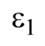
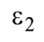
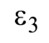

185-сон 14.07.2023. ShNQ 3.06.07-23 “Koʻpriklar va quvurlar. Tekshirish, sinash va diagnostika qilish qoidalari” shaharsozlik normalari va qoidalarini tasdiqlash toʻgʻrisida
Oʻzbekiston Respublikasi Qurilish va uy-joy kommunal xoʻjaligi vazirining
Buyrugʻi
ShNQ 3.06.07-23 “Koʻpriklar va quvurlar. Tekshirish, sinash va diagnostika qilish qoidalari” shaharsozlik normalari va qoidalarini tasdiqlash toʻgʻrisida
[Oʻzbekiston Respublikasi Adliya vazirligi tomonidan 2023-yil 18-avgustda hisobga olindi, hisob raqami 200]
Oʻzbekiston Respublikasining Shaharsozlik kodeksiga muvofiq buyuraman:
1. ShNQ 3.06.07-23 “Koʻpriklar va quvurlar. Tekshirish, sinash va diagnostika qilish qoidalari” shaharsozlik normalari va qoidalari ilovaga muvofiq tasdiqlansin.
2. Oʻzbekiston Respublikasi Davlat arxitektura va qurilish qoʻmitasi raisining 2009-yil 16-maydagi 63-son buyrugʻi bilan tasdiqlangan ShNQ 3.06.07-08 “Koʻpriklar va quvurlar. Tekshirish va sinash qoidalari” shaharsozlik normalari va qoidalari oʻz kuchini yoʻqotgan deb topilsin.
3. Mazkur buyruq Oʻzbekiston Respublikasi Transport vazirligi, Ichki ishlar vazirligi hamda Favqulodda vaziyatlar vazirligi bilan kelishilgan.
4. Ushbu buyruq rasmiy eʼlon qilingan kundan eʼtiboran kuchga kiradi.
Vazir B. ZAKIROV
Toshkent sh.,
2023-yil 14-iyul,
185-son
Kelishildi:
Oʻzbekiston Respublikasi favqulodda vaziyatlar vaziri A. KULDAShEV
2023-yil 3-iyul
Oʻzbekiston Respublikasi ichki ishlar vaziri P. BOBOJONOV
2023-yil 6-iyul
Oʻzbekiston Respublikasi transport vaziri I. MAXKAMOV
2023-yil 4-iyul
Oʻzbekiston Respublikasi qurilish va uy-joy kommunal xoʻjaligi vazirining 2023-yil 14-iyuldagi 185-son buyrugʻiga
ILOVA
ILOVA
ShNQ 3.06.07-23 “Koʻpriklar va quvurlar. Tekshirish, sinash va diagnostika qilish qoidalari” shaharsozlik normalari va qoidalari
Ushbu shaharsozlik normalari va qoidalari (bundan buyon matnda ShNQ deb yuritiladi) harakatlanuvchi vaqtincha yuklarga loyihalangan, temir yoʻllarda, metropoliten va tramvay yoʻllarida, avtomobil yoʻllarida, jumladan shaharlar va boshqa aholi punktlarining koʻchalarida joylashgan koʻpriklar (yoʻloʻtkazgichlar, jarkoʻpriklar, estakadalar, yoʻlovchi koʻpriklari) va koʻtarma osti quvurlarni (bundan buyon matnda koʻpriklar va quvurlar deb yuritiladi) tekshirish, diagnostika qilish hamda statik, dinamik va qisman sinash uchun qoʻllaniladi.
Mazkur ShNQ koʻpriklar va quvurlarning qurilishi tugallangandan soʻng (ularni foydalanishga qabul qilishda), rekonstruksiya (kuchaytirish, kengaytirish, uzaytirish, shu jumladan tabiiy ofat oqibatlarini bartaraf qilish) ishlarini bajarishdan avval va bajargandan soʻng olib boriladigan tekshirish, diagnostika va sinash ishlari uchun qoʻllaniladi.
Ushbu ShNQni foydalanishdagi koʻpriklar va quvurlarni tekshirish, diagnostika qilish va sinash, shuningdek maxsus yuklar (quvurlar, suv oʻtkazish ariqlari) uchun loyihalangan koʻpriklarni tekshirish, diagnostika qilish va sinashda qoʻllash mumkin.
Mazkur ShNQ quyidagi hollarda qoʻllanilmaydi:
koʻpriklar va quvurlar haqida chegaralangan (muayyan konstruksiyalar boʻyicha) maʼlumot olish maqsadida loyiha, ilmiy-tadqiqot va oliy taʼlim tashkilotlari tomonidan oʻtkaziladigan toʻliq boʻlmagan tekshirishlar uchun;
koʻpriklar va quvurlarning konstruksiyalari toʻliq yemirilgunga (buzilgunga) qadar olib boriladigan ilmiy sinashlar uchun;
koʻpriklar va quvurlarning konstruksiyalari, tugunlari va qismlarini tayyorlash hamda montaj qilish vaqtida bajariladigan nazorat, tekshirish va sinash ishlari uchun.
Qurilishi tugallangan va qayta taʼmirlangan koʻprik va quvurlarni tekshirish, diagnostika qilish boʻyicha ishlar oʻtkazilayotganda ShNQ 2.05.03 va ShNQ 3.06.04 talablari ham bajarilishi lozim.
1-bob. Umumiy qoidalar
1. Koʻpriklar va quvurlarni tekshirish, diagnostika qilish va sinash ishlari ularning texnik holatini aniqlash, shuningdek ishlash sharoitini oʻrganish maqsadida amalga oshiriladi.
Koʻpriklar va quvurlarni tekshirish alohida (diagnostika qilish va sinash ishlarisiz) bajarilishi mumkin.
Koʻpriklar va quvurlarni sinash va qisman sinash ishlari tekshirish bajarilgandan soʻng (ushbu ShNQning 37-bandiga muvofiq) uning natijalarini eʼtiborga olgan holda amalga oshirilishi lozim.
2. Tekshirish, koʻprik va quvurlar konstruksiyalarini diagnostika qilish (pasportlashtirish) va sinash ishlari ushbu toifadagi ishlarni bajarishga ixtisoslashgan tashkilotlar (bundan buyon matnda bajaruvchi deb yuritiladi) tomonidan amalga oshiriladi.
Tekshirish va sinash ishlarini olib boruvchi tashkilotlar texnik topshiriq va tekshirish dasturida belgilangan barcha ishlarni toʻliq hajmda bajarishi, shuningdek koʻprik va quvurlar konstruksiyalarining yuk koʻtarish qobiliyatini aniqlashda kerak boʻladigan maʼlumotlarni olish uchun zarur boʻlgan asbob va uskunalar bilan jihozlangan boʻlishi kerak.
Diagnostika ishlarini olib boruvchi tashkilotlar koʻprik va quvurlar konstruksiyalari materiallarining asosiy parametrlarini tadqiq qilish uchun zarur boʻlgan asbob va uskunalarning minimal majmuasiga ega boʻlishi kerak.
3. Tekshirish va sinash davrida paydo boʻladigan ayrim masalalarni (masalan, suv tubida joylashgan poydevorlar asosini tekshirish, elektr va kontakt tarmoqlarini elektr taʼminotidan vaqtincha uzish) hal etish uchun ushbu ishlarning buyurtmachisi, bajaruvchining taklifiga binoan, maxsus ishlarga ixtisoslashgan tashkilotlarni (suv osti ishlari stansiyalari, burgʻilash partiyalari, tuproq laboratoriyalari, elektr va kontakt tarmoqlarining texnik holati va ulardan toʻgʻri foydalanishni nazorat qiluvchi guruhlar) taklif qilishi mumkin. Ushbu jarayonlarga yoʻl harakati xavfsizligi xizmati va boshqa davlat idoralarining vakillari ham kelishuv asosida taklif qilinishi mumkin.
Bunda, jalb etilgan tashkilotlar tomonidan olingan maʼlumotlar bajaruvchi tomonidan qaror qabul qilishda eʼtiborga olinishi lozim.
4. Foydalanishga topshirilayotgan qurilishi tugallangan barcha koʻprik va quvurlar tekshirilishi yoki diagnostikadan oʻtkazilishi, shuningdek mazkur ShNQning 5-bandida qayd etilgan koʻpriklar sinashdan oʻtkazilishi, 6-bandida qayd etilganlari esa qisman sinalishi kerak.
5. Quyidagi inshootlar ekspluatatsiyaga qabul qilinishidan oldin sinalishi kerak:
tajribaviy yoki birinchi bor qoʻllanilayotgan konstruksiyali, texnologiyali va materialli koʻpriklar;
murakkab statik noaniq tizimli koʻpriklar (jumladan, vantli va osma);
bir necha turdagi transport vositalarini oʻtkazuvchi koʻpriklar;
oraligʻi 100 m dan ortiq boʻlgan metall koʻpriklar, oraligʻi 60 m ortiq boʻlgan poʻlat-temir-beton koʻpriklar;
oraligʻi 50 m dan ortiq boʻlgan temir-beton koʻpriklar;
individual loyihali piyodalar koʻpriklari;
polimer kompozitli koʻpriklar va grunt toʻldirmasi 3 m dan koʻp boʻlmagan polimer kompozitli suv oʻtkazish quvurlari.
Foydalanishga topshirilayotgan boshqa koʻpriklarni sinash (asosiy koʻtarib turuvchi elementlari yuqori takrorlanishga ega boʻlganda, shuningdek, tekshirish jarayonida konstruksiyalar ishonchliligi boʻyicha gumon paydo boʻlganida va shu kabilar) qabul komissiyasi qaroriga asosan, loyihalovchi va foydalanuvchi korxona talabiga koʻra oʻtkaziladi. Ushbu holatlarda sinash ishlarining kerakligi asoslantirilishi lozim.
6. Foydalanishga topshirilayotgan va sinash ishlari bajarilishi talab qilinmaydigan (ushbu ShNQning 5-bandiga muvofiq) temir yoʻl va metropoliten koʻpriklari, shuningdek AB yuklamasiga (ShNQ 2.05.03-22 ga asosan) moʻljallangan avtomobil yoʻli koʻpriklari qisman sinashdan oʻtkazilishi kerak.
7. Koʻpriklarda roʻy bergan halokatlardan soʻng (tabiiy va texnogen xususiyatli favqulodda vaziyatlar oqibatlari, vagonlarning izdan chiqishi, meʼyordan katta yuklarning urilishi va shu kabilar) qayta tiklash masalalari hal qilingunga qadar, asosiy koʻtarib turuvchi konstruksiyalar tekshirilishi yoki diagnostika qilinishi lozim.
8. Tekshirish yoki diagnostika (kerak boʻlgan hollarda sinash) oʻtkazilgunga qadar koʻprik va quvurlar rekonstruksiyasi (uzaytirish, kengaytirish, kuchaytirish va shu kabilar) loyihalarini ishlab chiqilmaydi.
9. Koʻtarish qobiliyati boʻyicha cheklanishlari boʻlgan koʻpriklar kengaytirilayotgan yoki uzaytirilayotgan hollarda, qoidaga koʻra, kengaytirish yoki uzaytirish ishlari bilan bir vaqtda mavjud koʻprikni kuchaytirish ishlari bajarilishi lozim.
Ayrim sabablarga koʻra ushbu ishlarni bir vaqtda bajarish imkoni boʻlmasa, koʻprikning kengaytirilayotgan yoki uzaytirilayotgan qismi amaldagi meʼyorlarga koʻra, cheklanishlarni eʼtiborga olmagan holda loyihalanadi. Bu hollarda koʻprikning koʻtarish qobiliyati yetarli boʻlmagan qismi kuchaytirilgunga qadar cheklanishlar butun koʻprikka tegishli boʻladi.
10. Koʻprik va quvurlarda rekonstruksiya ishlari tugatilgandan soʻng, ular qayta tekshirishdan oʻtkazilishi kerak. Tekshirish ishlarining hajmi qurilishi tugallangan inshootlarni tekshirish ishlari hajmiga mos boʻlishi kerak. Ushbu inshootlarni sinash boʻyicha qaror mazkur ShNQning 12-bandiga koʻra qabul qilinadi.
11. Foydalanishdagi koʻprik va quvurlarni tekshirish, diagnostika ishlari muntazam (rejaga asosan) olib borilishi kerak, biroq tekshirishlar 10 yilda 1-martadan, diagnostika esa 5 yilda 1-martadan kam boʻlmasligi kerak.
12. Inshootlardan foydalanish masalasi tekshirish maʼlumotlari asosida hisoblash yoʻli bilan hal boʻlmagan hollarda ushbu inshootlarda sinash ishlari oʻtkazilishi kerak.
Foydalanishdagi inshootlarni kapital taʼmirlashdan yoki rekonstruksiya qilishdan soʻng sinashga ehtiyoj quyidagi hollarda paydo boʻlishi mumkin:
qism yoki elementlarida nosozliklar aniqlanganda;
hisobiy koʻtarish qobiliyatiga aniqlik kiritilayotganda;
alohida ogʻir yuklarni xavfsiz oʻtkazish boʻyicha tadbirlar samaradorligini baholash uchun, shuningdek, boshqa asoslangan hollarda.
Sinash oʻtkazish zaruriyati bajaruvchi tomonidan asoslanadi, sinash oʻtkazish toʻgʻrisidagi qaror esa inshootdan foydalanuvchi tashkilot tomonidan qabul qilinadi.
13. Koʻprik va quvurlarni tekshirish, diagnostika va sinash ishlari bajaruvchi tomonidan ishlab chiqilgan (tegishli tashkilotlarning takliflarini eʼtiborga olgan holda) dastur asosida olib boriladi.
Dasturda hal qilinishi lozim boʻlgan asosiy masalalar va bajariladigan ishlarning umumiy maqsadi aks ettirilishi, tekshirish (diagnostika) ishlarining tarkibi hamda hajmi keltirilishi, sinash davrida oʻrganiladigan konstruksiyalar, shuningdek, ularning elementlari (kesimlari) belgilanishi, statik va dinamik sinashlar uchun yuklar koʻrsatilishi, texnik hisobot hujjatlari turi hamda tarkibi aniqlanishi lozim.
Koʻprik va quvurlarni diagnostika qilishda bajaruvchi tomonidan ishlab chiqilgan namunaviy dasturlardan foydalanish mumkin.
Avtomobil yoʻli va shahar koʻpriklarini sinash dasturlarining sinash yuki kattaligi va sxemasi, belgilangan yuklanishlarini aniqlashga doir qismi loyiha hisoblash hujjatlari asosida ishlab chiqilishi lozim.
Dastur buyurtmachi (inshootni qurayotgan yoki undan foydalanayotgan tashkilot) bilan kelishiladi va bajaruvchi tashkilot rahbari tomonidan tasdiqlanadi.
Koʻprik sinashi dasturini ishlab chiqish uchun bajaruvchining soʻroviga koʻra, loyiha tashkilotlari sinash uchun kerakli hisoblarni taqdim etishlari lozim.
Kerakli hisoblar boʻlmagan hollarda, buyurtmachi bajaruvchiga yoki loyiha tashkilotlariga ushbu hisoblarni bajarishni topshirishi mumkin.
14. Inshootning xususiyatlari va mahalliy sharoitlarni hisobga olgan holda, bajaruvchining rahbari (ishlar rahbari) ishlab chiqilgan dastlabki dasturning alohida bandlarini quyidagicha oʻzgartirishi va toʻldirishi mumkin:
alohida qoʻshimcha ishlarni oʻtkazishni belgilash (mazkur ShNQning 20-bandi);
tayyorlov ishlarining tarkibi hamda hajmini aniqlash;
konstruksiyalarni koʻrikdan oʻtkazish batafsilligini va nazorat oʻlchovlari hajmini aniqlashtirish;
oʻlchov asboblari joylashuvi oʻrnini, shuningdek, sinash yuklari bilan koʻprikni yuklash sxemasini aniqlashtirish;
sinash davrida koʻprikni yuklantirishning eng qulay tartibini aniqlash.
Kiritilgan oʻzgartirish va qoʻshimchalar dasturda belgilangan asosiy masalalarni yechishga yoʻnaltirilgan boʻlishi kerak.
15. Tekshirish va sinash bilan bogʻliq tayyorlov ishlari (vaqtincha havonlar va koʻrish moslamalarini oʻrnatish, buning uchun ish kuchi, materiallar ajratish, sinash yuki bilan taʼminlash, sinash davrida koʻprik usti hamda koʻprik ostida harakatni boshqarish va shu kabilar) quyidagi tashkilotlar tomonidan bajarilishi lozim:
yangi qurilgan inshootlarda — obyekt qurilishi ishlarini bajargan korxona;
foydalanishdagi inshootlarda — inshoot oʻz tasarrufida boʻlgan korxona.
Tayyorlov ishlarining tarkibi va hajmini tekshirish hamda sinashni bajaruvchi belgilaydi.
16. Koʻprik va quvurlarni tekshirish, diagnostika hamda sinash ishlari yaxshi ob-havo sharoitlarida (inshootlarning barcha qismlarini koʻrib chiqish imkoni boʻlgan, oʻrnatilgan asboblar ishlashiga salbiy taʼsir yoʻq, sinash yukining xavfsiz harakati uchun toʻsiq yoʻq, jalb qilingan ishchilarga nisbatan xavfsizlik texnikasi va mehnat muhofazasi boʻyicha barcha talablarni bajarish imkoni boʻlgan sharoitlarda) bajarilishi lozim.
Ob-havo sharoiti yaxshi boʻlmagan holatlarda (qor, kuchli yomgʻir, tuman), shuningdek, tashqi ob-havo harorati plyus 35°S dan ortiq va minus 20°S dan past boʻlganda diagnostika, tekshirish va sinash ishlari oʻtkazilmasligi kerak. Konstruksiyalar ustida qor, muz va muzlamalar boʻlganda, shuningdek, daryo ustida bajariladigan ishlar, muz oqimi va muz turish holatlari boʻlganda dala ishlarini bajarish taqiqlanadi.
17. Koʻprik va quvurlarni tekshirish, diagnostika va sinash boʻyicha ishlar QMQ 3.01.02 da koʻrsatilgan mehnat muhofazasi va xavfsizlik texnikasi boʻyicha qoidalar, shuningdek, mazkur ShNQning 1-ilovasida keltirilgan qoidalarni bajargan holda oʻtkazilishi lozim.
2-bob. Koʻprik va quvurlarni tekshirish, diagnostika qilish
1-§. Umumiy qoidalar
18. Koʻprik va quvurlardagi diagnostika ishlarining asosiy turlari quyidagilar:
diagnostika: davriy, birlamchi, rekonstruksiya yoki mukammal taʼmirlashdan soʻng, tabiiy va texnogen xususiyatli favqulodda vaziyatlar taʼsiridan soʻng, loyihalashdan oldin;
tekshirish: davriy, birlamchi, rekonstruksiyadan soʻng, rejadan tashqari maxsus, loyihalashdan oldin;
sinash bilan tekshirish.
Foydalanishga topshirishdan oldin yangi qurilgan va rekonstruksiya qilingan koʻprik va quvurlarni tekshirishning (diagnostika qilishning) asosiy vazifasi ushbu inshootlarning tasdiqlangan loyihaga va ShNQ 3.06.04 ning ishlar sifatiga boʻlgan talablariga mos kelishini aniqlash hisoblanadi.
Foydalanishdagi koʻprik va quvurlarda muntazam oʻtkaziladigan tekshirishlarning (diagnostikaning) asosiy vazifalari ularning holatini hamda belgilangan talablarga mos kelishini aniqlashdan iboratdir.
Foydalanishdagi inshootlarni tekshirish, diagnostika ishlari maxsus masalalarni (masalan, inshootlarni taʼmirlash va rekonstruksiya qilish (kuchaytirish) loyihalarini ishlab chiqish uchun, hisobiy yuk koʻtarish qobiliyati aniqlashtirilayotganda, ogʻir yukli transport vositalarini oʻtkazish va boshqalarni) hal qilish uchun bajarilishi mumkin.
19. Koʻprik va quvurlarni tekshirish (diagnostika) davrida quyidagi turdagi asosiy ishlar bajariladi:
texnik hujjatlar bilan tanishish;
inshootni koʻrikdan oʻtkazish;
nazorat oʻlchovlari va asboblar yordamida tasvirga tushirish;
konstruksiyalarning texnik holati haqida hisobot yoki oʻrganilgan inshootning texnik pasportini tuzish.
20. Inshootning holati va tekshirish davrida qoʻyilgan masalalardan kelib chiqib, quyidagi qoʻshimcha ishlar ham bajarilishi mumkin:
buzmaydigan usullar (masalan, ultratovush, sklerometrik, akustik emissiya usuli va boshqalar) yordamida materiallar sifatini tekshirish;
temir-beton elementlardagi armaturani ochib koʻrish (armatura holatini aniqlash, shuningdek, buzmaydigan usullar yordamida olingan maʼlumotlar toʻgʻriligini tekshirish uchun);
laboratoriya sinashlarini oʻtkazish uchun materiallardan namunalar olish (qoʻllanilgan materiallar belgilangan talablarga javob bermasligi aniqlangan hollarda);
oʻzan holatini oʻrganish;
uzoq muddatli asboblar yordamida kuzatishlarni tashkil qilish;
avtomobil yoʻli va shahar koʻpriklari koʻprik qoplamasi elementlarini ochib koʻrish (ularning qalinligini aniqlashtirish va gidroizolatsiya holatini baholash uchun);
boshqa ishlar, jumladan jalb qilingan maxsus tashkilotlar (mazkur ShNQning 3-bandiga muvofiq) yordamida bajariladigan ishlar.
Bunda:
1) buzmaydigan usullar yordamida materiallarning sifati nazorat qilinganda, shuningdek, laboratoriya ishlari uchun ashyolardan namunalar olinganda, mazkur ShNQning 2-ilovasida keltirilgan standartlar talablari va koʻrsatmalari bajarilishi lozim;
2) materiallardan namunalar inshootning ikkinchi darajali va zoʻriqtirilmagan qism va elementlaridan olinishi mumkin. Konstruksiyaning namuna olingan joylari berkitilishi, zarur boʻlgan hollarda esa kuchaytirilishi kerak.
21. Koʻprik va quvurlarda tekshirish, diagnostika oʻtkazilayotganda inshootning texnik hujjatlarida qabul qilingan belgilash va hisobga olish usulidan foydalanish zarur. Bu tartib dala ishlari hamda tekshirish boʻyicha hisobot hujjatlarida qoʻllanilishi lozim. Bunda, texnik hujjatlar mavjud boʻlmagan hollarda yoki ularda kerakli maʼlumot boʻlmasa belgilash idoraviy koʻrsatmalar (yoʻriqnomalar) asosida bajariladi.
22. Koʻprik va quvurlarni tekshirish hamda diagnostika qilish vaqtida aniqlangan inshootdagi barcha kamchiliklar (oxiriga yetkazilmagan ishlar, nosozliklar, nuqsonlar) belgilanishi va ahamiyatiga koʻra baholanishi kerak.
Koʻprik va quvurlarning turli konstruksiyalarida eng koʻp uchraydigan nosozlik va shikastlanishlar, ularning kelib chiqish ehtimoli koʻrsatilgan holda mazkur ShNQning 3-ilovasida keltirilgan.
2-§. Texnik hujjatlar bilan tanishish
23. Tekshirish, diagnostika va sinash ishlari bajarilganda aniq bir inshoot uchun texnik hujjatlar bilan batafsil tanishishning muhimlik darajasini bajaruvchining rahbari (ishlar rahbari) ish dasturida qoʻyilgan vazifalardan kelib chiqqan holda belgilaydi.
Quyidagi tashkilotlar tekshirish, diagnostika va sinash davrida tanishib chiqilishi uchun texnik hujjatlarni bajaruvchiga taqdim etadilar:
qurilishi tugallangan inshootlarda — qurilishning bosh pudratchisi yoki uning topshirigʻiga binoan qurilishni olib borgan korxona;
foydalanilayotgan inshootlarda — tasarrufida tekshirilayotgan inshoot boʻlgan korxona.
24. Qurilishi tugallangan inshootlarning texnik hujjatlari bilan tanishilganda, qoidaga koʻra, quyidagilarga eʼtibor berish lozim:
tasdiqlangan loyiha va amaldagi meʼyoriy hujjatlardan chekinishlarning toʻgʻri rasmiylashtirilganligi;
foydalanilgan qurilish materiallarining fizik, mexanik va ximik xususiyatlarining loyiha va meʼyoriy hujjatlar talablariga mos kelishi;
alohida konstruksiyalarning (masalan, yigʻma oraliq qurilma toʻsinlari, tayanch bloklari va shu kabilar) oraliq qabul qilinishini, shuningdek, joyida bajarilgan muhim yopilib ketadigan ishlarni rasmiylashtirish bajarilganligi va sifati.
25. Foydalanishdagi koʻprik va quvurlarning texnik hujjatlari bilan tanishuv avval oʻtkazilgan tekshirish, diagnostika va sinashlarning maʼlumotlarini oʻrganishni oʻz ichiga oladi. Bunda, inshootni ishchi holatda saqlab turish uchun berilgan tavsiyalar qanday bajarilganligi oʻrganiladi.
Bundan tashqari, inshootdan joriy foydalanish (jumladan, nuqsonlar va shikastlanishlarni aniqlash), taʼmirlash, uzoq muddatli kuzatishlar va monitoringga tegishli maʼlumotlar ham oʻrganib chiqilishi lozim.
Hujjatlarda keltirilgan maʼlumotlarning toʻliqligi, shuningdek, mavjud hujjatlarning haqiqiy maʼlumotlarga mosligi tahlil qilinadi.
26. Texnik hujjatlar bilan tanishish natijasida quyidagilar aniqlanadi:
konstruksiyalarning xususiyatlari;
hujjatlarni yuritishning toʻliqligi va sifati;
qurilish paytida tasdiqlangan loyihadan chetga chiqilganligi;
qoʻllaniladigan qurilish materiallari sifatining loyihaga mosligi;
oʻtgan ekspluatatsiya davri mobaynida inshoot holatidagi oʻzgarishlar;
nuqsonlar, avariyalar oqibatlari, kuzatuvlar natijalari va oldingi diagnostik ishlar bilan, shuningdek, diagnostika yoki tekshirishlar oʻrtasidagi ekspluatatsiya davrida aniqlangan taʼmirlash ishlari hajmlari.
Keyingi ishlar tarkibi va hajmi texnik hujjatlar bilan tanishish natijalari va hujjatlardagi maʼlumotlarning toʻliqligiga bogʻliq. Texnik hujjatlar mavjud boʻlmaganda va ularni tiklash imkoni boʻlmaganda inshootni tekshirish yoki diagnostika boʻyicha barcha ishlar maksimal hajmda bajariladi.
3-§. Inshootlarni koʻrikdan oʻtkazish
27. Inshootlarni koʻrikdan oʻtkazayotgan vaqtda asosiy eʼtiborni uning qismlari va elementlarida mavjud boʻlgan nosozliklarni (masalan, yoriqlar, betonning koʻchishi, boʻshliqlar va boʻrtib chiqishlar, chok bogʻlovlari va elementlar birlashuvlarining buzilishi, korroziya taʼsiridagi nosozliklar, koʻtarma qiyaliklari, yoʻnaltiruvchi va qirgʻoqlarni himoyalovchi dambalarning yemirilishi, suv qochirish, gidroizolatsiya, deformatsiya choklari, tenglashtiruvchi asboblar va koʻprik qoplamasiga yoki yoʻlning yuqori qurilmasiga tegishli boshqa elementlarda nosozliklarni) aniqlashga qaratiladi. Bundan tashqari, konstruksiyalarda loy, suv, qor, muz hamda foydalanish jarayonida qoʻllaniladigan muzlashga qarshi moddalar turib qolishi natijasida turli salbiy hodisalar (zanglash, betonning himoya qavati koʻchishi va boshqalar) rivojlanishi mumkin boʻlgan joylar aniqlanishi lozim.
28. Sel yoki zilzila xavfi boʻlgan mintaqalarda joylashgan koʻprik va quvurlar koʻrikdan oʻtkazilganda, himoya moslamalari va konstruksiyalar (dambalar, seysmik tirgaklar, tayanch qismlar va shu kabilar) holati va ishlashiga eʼtibor beriladi.
29. Aniqlangan nosozliklar dala ishlari hisobotlarida imkoni boricha toʻliq, paydo boʻlish vaqti va paydo boʻlish sabablarini koʻrsatgan holda yoritilishi lozim. Eng xavfli, shuningdek koʻp uchraydigan nuqsonlar va nosozliklar qogʻozga chizib olinishi yoki suratga tushirilishi kerak.
4-§. Nazorat oʻlchovlari va asboblar yordamida tasvirga tushirish
30. Koʻpriklar va quvurlarning asosiy oʻlchamlari va koʻndalang kesim, birikuv va birlashuv joylari oʻlchamlarining nazorat tekshiruv ishlari inshootning haqiqiy geometrik oʻlchamlari (ruxsat etilgan chetlanishlarni hisobga olgan holda) loyihaviy, ijro va foydalanish texnik hujjatlarida koʻrsatilgan oʻlchamlarga mos kelishiga baho berish uchun amalga oshiriladi.
Oʻtkaziladigan nazorat oʻlchovlari turi va kerakli hajmi, texnik hujjatlar bilan tanishgandan va inshoot koʻrikdan oʻtkazilgandan soʻng bajaruvchining rahbari (ishlar rahbari) tomonidan belgilanadi.
31. Koʻpriklarni tekshirish, diagnostika oʻtkazish vaqtida geodezik asboblar yordamida tasvirga tushirish quyidagi maqsadlarda amalga oshiriladi:
transport vositalarining inshoot boʻylab (yoki uning tagidan) harakatlanish sharoitiga baho berish va bu sharoitlarning belgilangan talablarga mos kelishini aniqlash;
montaj ishlari sifatini aniqlash (yangi qurilgan inshootlar uchun);
inshootda koʻzda tutilgan nishabliklar oʻlchamlarini tekshirish;
inshootdan foydalanish davrida paydo boʻladigan oʻzgarishlar (jumladan, deformatsiyalar) qiymatini keyingi tekshiruvlar vaqtida aniqlash uchun inshootning alohida qismlari va elementlari holatini aniq geodezik belgilash.
32. Geodezik asboblar yordamida quyidagilar aniqlanadi:
a) temir yoʻl va metropoliten koʻpriklarida:
rels yoʻli boʻylama profili (alohida yoʻllar boʻyicha);
rels yoʻli plani (koʻprik oʻqi yoki oraliq qurilmalar oʻqiga bogʻlagan holda);
oraliq qurilmalarning bosh fermalari (toʻsinlari) boʻylama profili (harakati ballast ustida tashkil qilingan kichik koʻpriklar oraliq qurilmalaridan tashqari);
koʻpriklar foydalanishga qabul qilinayotganda va planda siljishi aniqlangan boshqa holatlarda oraliq qurilmalar bosh fermalari (toʻsinlari)ning plani;
koʻprik tayanchi asosiy qismlarining (ferma tagliklari, sarrovlar, poydevor qirqimlari va shu kabilar) balandlik boʻyicha joylashuvi;
b) avtomobil yoʻli va shahar koʻpriklarida:
harakat qismi yoki yurish qismining (yoʻlovchilar koʻpriklarida) boʻylama profili;
harakat qismi yoki yurish qismining koʻndalang profili;
oraliq qurilma bosh fermalari (toʻsinlari)ning plani;
koʻprik tayanchi asosiy qismlarining balandlik boʻyicha joylashuvi.
Bunda, asbobli tasvirga tushirishlarning kerakli turlari, oʻzan kesimlari, koʻndalang kesimlar va tasvirga tushirish joylarining soni tekshirish dasturida belgilanadi va mazkur ShNQning 31-bandi talablarini, dasturda koʻrsatilgan masalalarni, inshootning oʻziga xos xususiyatlarini, avval oʻtkazilgan asbobli tasvirga tushirish natijalarini va boshqa sharoitlarni hisobga olgan holda bajaruvchining rahbari (ishlar rahbari) tomonidan joyida aniqlashtirilishi mumkin.
33. Yoʻloʻtkazgich va estakadalarning koʻprik osti gabariti balandligi tekshirilganda kesib oʻtilayotgan (pastki) yoʻllarning boʻylama va koʻndalang profillari tasvirga tushirilishi kerak.
34. Asbobli tasvirga tushirish ishlari ishonchli mahkamlangan nuqtalar yoki uzoq muddatli markalar (uzoq muddat saqlanadigan nuqta) boʻyicha (uzoq muddatli kuzatishlar olib borilganda) va qulay ob-havo sharoitlarida (kam quyoshli va shamolsiz vaqtda) oʻtkazilishi kerak.
Barcha nivelirlash balandlik belgilari har safar bitta doimiy reperdan oʻlchanishi lozim. Reper qurilish davrida yoki tekshirishdan (diagnostikadan) oldin inshoot tashqarisiga oʻrnatilishi kerak. Reper absolyut yoki nisbiy belgiga ega boʻlishi mumkin.
Asbobli tasvirga tushirishlar hujjatlarida quyidagi maʼlumotlar koʻrsatilishi lozim:
tasvirga tushirish vaqti;
ob-havo sharoitlari;
qoʻllanilgan geodezik asboblar turlari va aniqligi;
qoʻllanilgan reperlar.
35. Kerak boʻlgan hollarda (masalan, tayanchlarning choʻkishi yoki qiyalanishi aniqlanganda, oraliq qurilmalar oʻz oʻrnidan siljiganda, yoriqlar rivojlanganda, aylanasimon quvurlarning ovalligi oshganda va shu kabilar) inshootlardan foydalanayotgan tashkilotlar, bajaruvchi tavsiyasiga koʻra, uzoq muddatli kuzatishlar olib borish uchun maxsus markalar oʻrnatishi lozim.
Kuzatuvlar (oʻlchovlar) turi, shuningdek, davriyligi oʻrganilayotgan hodisaning xususiyati va rivojlanishining taxmin qilinayotgan tezligidan kelib chiqqan holda ishlab chiqilgan maxsus dasturlarda koʻrsatiladi.
Uzoq muddatli kuzatishlar maqsadi va mazmunidan kelib chiqqan holda bajaruvchi yoki foydalanuvchi tashkilotlar tomonidan amalga oshirilishi mumkin.
36. Suv oʻtkazish quvurlarini tekshirishda yoki diagnostikasida nazorat oʻlchovlari va asbobli tasvirga tushirish mazkur ShNQning 3-ilovasida koʻrsatilgan talablarga koʻra bajarilishi kerak.
3-bob. Koʻpriklarni sinash va qisman sinash
1-§. Umumiy talablar
37. Koʻpriklar va quvurlarni sinash ularning kuchlanish-deformatsiya holatini nazorat qilish, ishlashida oʻziga xos xususiyatlarini va ularni loyiha koʻrsatkichlari hamda hisoblarga mosligini aniqlash maqsadida oʻtkaziladi.
Sinash yoki qisman sinash boshlangunga qadar quyidagilarga imkon beradigan hajmda tekshirish ishlari tugatilishi lozim:
sinash yuki bilan inshootning yuklanish imkoni borligini aniqlash (inshootning koʻtarish qobiliyatini kamaytiruvchi oxiriga yetkazilmagan ishlarning yoʻqligi, koʻprik boʻylab harakatlanishga va koʻprikka chiqib-tushishga toʻsiqlar yoʻqligi va shu kabilar);
sinash yukining chegaraviy ruxsat etilgan qiymatini aniqlash (loyihalash meʼyorlari hamda konstruksiyadagi mavjud nosozlik va shikastlanishlarni eʼtiborga olgan holda);
oʻtkazilgan yuklanishlar natijasida roʻy bergan oʻzgarishlarni aniqlash imkonini berish uchun inshoot holatini baholash;
dinamik sinashlar vaqtida yukning harakatlanish sharoitini belgilash (yoʻlning plani va profili, harakat qismdagi notekisliklar borligi hamda joylashuvi va shu kabilarni eʼtiborga olgan holda).
38. Koʻprikda bir nechta bir xil konstruksiyalar boʻlsa (oraliq qurilmalar, tayanchlar) va ularning ishini mazkur ShNQning 5 yoki 12-bandi boʻyicha oʻrganish talab qilinsa, sinashni toʻliq hajmda konstruksiyalarning bittasida oʻtkazishga ruxsat etiladi. Qolgan konstruksiyalar toʻliq boʻlmagan hajmda sinashdan oʻtkazilishi mumkin.
39. Qoʻllaniladigan mexanik asboblar va elektron oʻlchash tizimlari koʻrsatkichlari (aniqligi, oʻlchash chegarasi, chastotalari xususiyati va boshqalar), ularni oʻrnatish usullari va qoʻllanilgan oʻrnatish moslamalari oʻlchanayotgan koʻrsatkichlarning qiymatlarini kerakli aniqlikda barqaror olish imkonini berishi kerak.
Qoidaga koʻra, sinash vaqtida tekshirishdan oʻtgan standart asboblardan foydalaniladi. Uslubiy qoʻllanmalari boʻlgan nostandart asboblardan ham foydalanishga ruxsat etiladi.
40. Sinash ishlari vaqtida asboblarni mexanik, iqlimiy va boshqa taʼsirlardan saqlash zarur. Sinash ishlari davomida asboblarga havo harorati taʼsirini bartaraf etish imkoni boʻlmasa, bu taʼsir hisoblash usuli bilan aniqlanadi hamda ushbu asboblar yordamida olingan maʼlumotlarga oʻzgartirishlar kiritiladi.
41. Sinash ishlari boshlanishidan oldin bajaruvchining rahbari (ishlar rahbari) tomonidan sinash ishlariga toʻsqinliklarni bartaraf etish, shuningdek, koʻprikka keluvchi yoʻl qismlarida transport vositalari va yoʻlovchilarning xavfsiz harakatlanishini taʼminlash boʻyicha tadbirlar ishlab chiqilishi va tayyorlov ishlari bajaruvchi tashkilotlarga (mazkur ShNQning 15-bandiga muvofiq) taqdim etilishi lozim.
Sinash bilan bogʻliq ishlar oʻtkazilgan vaqtda koʻprikdagi harakat toʻliq toʻxtatilmasa, transport vositalarining tor sharoitda xavfsiz harakatlanishini taʼminlash va asboblar koʻrsatkichlari olinayotgan vaqtda harakatni toʻxtatib turish boʻyicha tadbirlar koʻzda tutilishi lozim.
42. Oʻrnatilgan asboblar koʻrsatkichlari taxmin qilingan qiymatlardan sezilarli darajada ortib ketganda, shuningdek, konstruksiya holatida kutilmagan oʻzgarishlar aniqlanganda (masalan, poʻlat elementlar va ularning bogʻlanishlarida yoriqlar va qavariqlar paydo boʻlishi, temir-beton elementlar betonining koʻchishi va ezilishi kabi hodisalar va boshqalar) bajaruvchining rahbari (ishlar rahbari) qarori bilan sinash toʻxtatilishi va sinash yuki sinalayotgan konstruksiyadan tashqariga chiqarilishi lozim. Sinash ishlari konstruksiya holati batafsil tekshirilib, roʻy bergan hodisa sabablari va ularning xavfliligi baholangandan soʻng davom ettirilishi mumkin.
2-§. Statik sinashlar
43. Inshootning istalgan elementida sinash yuklaridan kuchlanishlar (kuchlar, momentlar) quyidagi qiymatlardan oshmasligi lozim:
a) chegaraviy holatlar boʻyicha hisoblangan inshootlar sinalganda, — loyihada qabul qilingan harakatlanuvchi vaqtincha vertikal yukdan, yuk boʻyicha ehtiyotlik koeffitsiyenti (yoki ortiqcha yuk koeffitsiyenti) birga teng boʻlganda va toʻliq dinamik koeffitsiyentda paydo boʻlgan kuchlanishlardan;
b) ruxsat etilgan kuchlanishlar (1962-yilgacha amalda boʻlgan meʼyorlarga koʻra) boʻyicha hisoblangan inshootlar sinalganda, — loyihada qabul qilingan harakatlanuvchi vaqtincha vertikal yukdan, toʻliq dinamik koeffitsiyentda paydo boʻlgan kuchlanishlarning 120% dan;
v) koʻtarish qobiliyati past elementlari boʻlgan inshootlar va texnik hujjatlari boʻlmagan inshootlar sinalganda, — inshootning hisobiy yuk koʻtarish qobiliyatiga mos keluvchi, vaqtincha vertikal yukdan paydo boʻlgan kuchlanishlardan.
Bunda, inshootning hisobiy yuk koʻtarish qobiliyati amaldagi idoraviy hujjatlar (yoʻriqnomalar, koʻrsatmalar) asosida, konstruksiyaning fizik holatini (jumladan, koʻrik paytida aniqlangan shikastlanish va nuqsonlarni) eʼtiborga olgan holda aniqlanadi.
44. Qoidaga koʻra, sinash yukidan sinalayotgan inshoot elementlaridagi kuchlanishlar (kuchlar, momentlar) quyidagi qiymatlardan kam boʻlmasligi lozim:
a) temir yoʻl koʻpriklari, tramvay yoki metropoliten koʻpriklari, katta yuk koʻtarish qobiliyatiga ega avtomobillar (AB yuklanish) harakatlanadigan koʻpriklar sinalganda, — ushbu tarmoq yoki yoʻlda harakatlanadigan eng ogʻir yukdan hosil boʻluvchi kuchlanishdan;
b) avtomobil va shahar koʻpriklari sinalganda, — koʻprik turlari boʻyicha mos ravishda mazkur ShNQning 43-bandida koʻrsatilgan kuchlanishlarning 70% dan.
45. Statik sinashlar vaqtida yuk sifatida quyidagi harakatlanuvchi yuklardan foydalanish zarur:
lokomotivlar va temir yoʻlning harakatlanuvchi tarkibi;
metropoliten poyezdlari va tramvaylar;
avtomobil yoʻli transport vositalari va shu kabilar.
Ayrim hollarda (masalan, koʻprikning alohida elementlari sinalganda, konstruksiyaning, polimer kompozitli quvurlarning bikrligi aniqlangan holda va shu kabilar) sinash yuklari sifatida domkratlar, yuk koʻtargichlar, alohida yuklar qoʻllanilishi mumkin, bu holda paydo boʻlgan zoʻriqishlar sinash davrida oʻzgarishsiz saqlab turiladi.
46. Sinash ishlarida qoʻllaniladigan transport vositalarining ogʻirligi sinashdan oldin aniqlashtiriladi. Ogʻirliklarni belgilash aniqligi 5% dan kam boʻlmasligi kerak.
Lokomotivlar ogʻirligi, shuningdek, yuk ortilmagan temir yoʻl vagonlari, metropoliten, tramvay va avtomobil transporti vositalari ogʻirliklari texnik pasportlar maʼlumotlari boʻyicha qabul qilinishi mumkin.
Sinash yukining amaldagi tarkibi va ogʻirligini hisobga olgan holda, bajaruvchining rahbari (ishlar rahbari), sinash ishlaridan oldin dasturlarda belgilangan koʻpriklarning yuklanish sxemalarini oʻzgartirishi mumkin.
47. Sinash yuki bilan inshootni yuklantirish sxemasini ishlab chiqish, inshootning qism va elementlaridagi kuchlanishlar (kuchlar, momentlar) taʼsir chiziqlaridan (taʼsir yuzalaridan) foydalangan holda bajariladi.
Yuklanish sxemasini tanlash vaqtida, inshootning oʻrganilayotgan qismlari va elementlarida imkon qadar katta kuchlanishlar paydo boʻlishiga intilish lozim (mazkur ShNQning 43-bandida keltirilgan chegaralarda).
48. Sinash yuki bilan konstruksiyaning dastlabki yuklanishini bosqichma-bosqich oʻtkazish, shu bilan birga har bosqichda inshoot ishini alohida oʻlchash asboblari koʻrsatkichlari yordamida nazorat qilib borish lozim.
49. Sinash yukining belgilangan har bir joylashuvida toʻxtab turish vaqti oʻlchov asboblari koʻrsatkichining doimiyligiga qarab aniqlanadi, bunda, koʻrilayotgan deformatsiyalar ortishi 5 minut davomida 5% dan oshmasligi kerak.
Asboblardan olinadigan koʻrsatkichlar aniqligini oshirish maqsadida konstruksiyani yuklantirish va yuklarni olish vaqti, shuningdek, asboblar koʻrsatkichlarini yozib olish vaqti imkon qadar kam boʻlishi kerak.
Konstruksiyadagi eng katta deformatsiyalar qiymati aniqlanishi kerak boʻlgan hollarda yukning konstruksiya ustida toʻxtab turish vaqti kuzatilayotgan deformatsiyaning ortishi, inshoot materiali, bogʻlov choklari turlari va holati oldingi yuklanishlarga koʻra belgilanadi.
Qoldiq deformatsiyalarni aniqlash konstruksiyani sinash yuki bilan dastlabki yuklash natijalariga koʻra bajariladi.
50. Aniqlikni taʼminlash maqsadida, qoidaga koʻra, konstruksiyani sinash yuki bilan yuklantirish takrorlanishi kerak. Oʻtkazilgan sinashlar natijasiga koʻra, bajaruvchining rahbari (ishlar rahbari) qayta yuklanishlarning kerakli miqdorini belgilaydi.
51. Statik sinashlar davomida quyidagilar oʻlchab borilishi kerak:
inshoot va uning qismlari umumiy koʻchishlari va deformatsiyalari;
element kesimlaridagi kuchlanishlar (nisbiy deformatsiyalar);
mahalliy deformatsiyalar (yoriq va choklarning ochilishi, birlashuvlardagi siljishlar va shu kabilar).
Bundan tashqari, konstruksiya turi va holatidan, shuningdek, sinash ishlari maqsadidan kelib chiqqan holda burchakli deformatsiyalar, inshoot qismlarining bir-biriga nisbatan siljishlari, elementlardagi kuchlanishlar (vantlar, shprengellar va shu kabilarda) oʻlchanishi mumkin.
52. Oʻlchov asboblarini oʻrnatish joyi sinash ishlari vaqtida vaqtincha vertikal yuklar ostida inshoot ishlashi haqida toʻliq maʼlumot olish imkonidan kelib chiqqan holda aniqlanadi.
Koʻchishlar va deformatsiyalarni oʻlchash uchun yuk ostida eng koʻp ishlovchi konstruksiya qism va elementlari, shuningdek, tekshirish natijalari yoki boshqa sabablarga koʻra oʻrganilishi lozim boʻlgan elementlar va bogʻlanishlar tanlanadi.
3-§. Dinamik sinashlar
53. Dasturda qoʻyilgan vazifalarga koʻra dinamik sinashlar quyidagi maqsadlarda bajariladi:
harakatlanuvchi yuklar paydo qiladigan dinamik taʼsirlar qiymatini aniqlash;
inshootning asosiy dinamik xususiyatlarini — oʻz tebranishlari chastotasi va turi, inshootning dinamik bikrligi, tebranishlarning sekin asta toʻxtashi xususiyatlarini aniqlash.
Piyodalar koʻpriklarida dinamik koeffitsiyent aniqlanmaydi.
54. Harakatlanuvchi yuklar paydo qiladigan dinamik taʼsirlar qiymatini aniqlash uchun yoʻl chizmasi yoki harakat qismida boʻlgan notekisliklar taʼsirida konstruksiyada tebranishlar, zarb taʼsirlari, mahalliy zoʻriqishlar va shu kabilarni paydo qilishi mumkin boʻlgan ogʻir yuklardan foydalanish kerak.
55. Inshootning dinamik xususiyatlarini oʻrganish uchun barqaror tebranishlar (jumladan, ozod tebranishlar) paydo qiladigan, harakatlanuvchi, zarbali, titratuvchi, shamol va shu kabi yuklardan foydalanish lozim.
Piyodalar koʻpriklarini dinamik sinashdan oʻtkazish vaqtida konstruksiyaning oʻz tebranishlarini paydo qilish uchun inshootni tebratish, yuk tashlash, koʻprik boʻylab alohida yoʻlovchilar yoki ularning guruhlarini harakatlantirish (yurib oʻtish yoki yugurish) va boshqa usullardan foydalanish mumkin.
Tebranishni paydo qiluvchi yuklar joylashish oʻrni, shuningdek, deformatsiyalarni oʻlchash oʻrnini tanlashda tebranishlarning kutilayotgan turi va shakli eʼtiborga olinadi.
Konstruksiyadagi tebranishlar tashlanayotgan yuklar yordamida paydo qilinganda, konstruksiyani mahalliy shikastlanishlardan saqlab qolish tadbirlari (masalan, qum yostiqchalarini yoki taqsimlovchi qoplamalar va shu kabilarni oʻrnatish) koʻrib chiqilishi lozim.
56. Dinamik sinashlar vaqtida harakatlanuvchi vaqtincha vertikal yuklardan konstruksiya qismlari va elementlarida zoʻriqish mazkur ShNQning 43-bandida koʻrsatilgan qiymatlardan oshmasligi lozim.
57. Avtomobil yoʻli va shahar koʻpriklarini sinash vaqtida, kerak boʻlgan hollarda (masalan, inshootning dinamik xususiyatlarini aniqlash uchun, harakat qismidagi notekisliklar taʼsirini baholash uchun va shu kabi hollarda), harakatlanuvchi yuklarning dinamik taʼsiri maxsus choralar (masalan, sunʼiy paydo qilingan notekisliklar (zinachalar) orqali avtomobillar yurgizish) yordamida kuchaytiriladi.
Davriy takrorlanuvchi turtkilar koʻrinishidagi tebratuvchi dinamik kuchlarni ikki oʻqli avtomobilni zinachalar (harakat yoʻnalishiga koʻndalang joylashgan taxtalar) ustidan yurgizish yoʻli bilan paydo qilish mumkin, bunda, zinachalar orasidagi masofa avtomobil gʻildiraklari orasidagi masofaga teng boʻlishi kerak.
58. Yuklar turli tezlikda harakatlanganda inshootning ishlashi xususiyatlarini aniqlash uchun, dinamik sinashlar vaqtida harakatlanuvchi yuklar inshoot boʻylab turli tezliklarda oʻtkazilishi lozim.
Yuklarni oʻtkazish tezligi, shuningdek, yuklarni belgilangan tezlik bilan oʻtkazish miqdori bajaruvchining rahbari (ishlar rahbari) tomonidan belgilanadi. Har bir tezlikda kamida 10-marta yuklarni oʻtkazish, yuklardan paydo boʻlgan dinamik taʼsir katta boʻlgan hollarda yuklarni oʻtkazishni takrorlash tavsiya qilinadi.
59. Dinamik sinashlar vaqtida inshootning umumiy koʻchishlari (masalan, oraliq oʻrtasidagi solqish, harakatlanuvchi tayanch qismlarda oraliq qurilma qirralarining siljishi), kerak boʻlgan hollarda esa inshootning alohida elementlarida koʻchishlar va deformatsiyalar (kuchlanishlar) oʻzi yozadigan asboblar yordamida qayd etilishi lozim. Dinamik sinashlarni oʻtkazishda elektron oʻlchash tizimlaridan foydalanish tavsiya etiladi. Bunda, elektron oʻlchov asboblarining koʻrsatkichlari tebranishlarning barqaror diagrammasini olish va ularni tahlil qilish imkoni boʻlgan davr ichida yozib borilishi zarur.
4-§. Qisman sinash
60. Koʻpriklarni qisman sinash ishlari ushbu tarmoq yoki yoʻlda harakatlanishi mumkin boʻlgan eng ogʻir yuk ostida konstruksiyaning ishlashini oʻrganish maqsadida bajariladi.
Temir yoʻl va metropoliten koʻpriklarini qisman sinash — ogʻir poyezdlar yordamida, AB avtomobil yuklanishiga loyihalangan koʻpriklarni qisman sinash esa — ogʻir avtomobillar yordamida bajariladi.
Qisman sinash vaqtida konstruksiyalar holati kuzatib boriladi, shuningdek, oddiy vositalar yordamida (masalan, nivelirlash yordamida) oraliqlar oʻrtasidagi solqish oʻlchanishi mumkin.
61. Temir yoʻl va metropoliten koʻpriklarini qisman sinashni poyezdlarning borib-kelish harakatlaridan foydalangan holda bajarish tavsiya qilinadi. Turli tezliklar bilan poyezdlar oʻtishining umumiy soni, qoidaga koʻra, 12 tadan kam boʻlmasligi kerak. Poyezdning dastlabki ikki-uch oʻtishi past tezlikda (5 — 10 km/soat) bajariladi. Solqish oʻlchanishi kerak boʻlgan hollarda poyezd toʻxtatib turiladi.
62. AB avtomobil yuklanishiga loyihalangan va ikkita yoki undan koʻproq harakat yoʻlakchalariga ega boʻlgan koʻpriklar qisman sinalganda, chekka yoʻlakchalardan biriga qisman sinalayotgan konstruksiya boʻylab qoʻshni avtomobillarning orqa va oldi oʻqlari orasidagi masofani 10 m qilib avtomobillar qatorlab joylashtiriladi. Qoʻshni boʻsh yoʻlakcha orqali esa 10 — 40 km/soat tezlik bilan alohida avtomobillar harakati bajariladi. Avtomobillar oʻtishi soni, qoidaga koʻra, beshtadan kam boʻlmasligi kerak.
Inshoot holati koʻrib chiqilgandan soʻng avtomobillar qatorlab boshqa chekka yoʻlakchaga oʻrnatiladi va alohida avtomobillar harakati esa boʻshagan yoʻlakchada bajariladi.
Bir yoʻlakchali koʻpriklarda qisman sinash ishlari bajarilganda faqat alohida avtomobillarni yurgizish amalga oshiriladi.
4-bob. Tekshirish, diagnostika va sinash natijalari asosida inshootni baholash
63. Inshootning texnik holatini va ishini baholash tekshirish, diagnostika va sinashlar boʻyicha barcha ish turlarini har tomonlama tahlil qilish yoʻli bilan bajarilishi kerak. Bunda, mazkur ShNQning 4-ilovasida keltirilgan koʻpriklarni tekshirish va sinash ishlarining asosiy natijalarini tahlil qilish va baholash boʻyicha tavsiyalar, shuningdek, sohaga oid idoraviy hujjatlardan foydalanish mumkin. Tahlil nosozliklarni darajalar boʻyicha baholash usulidan foydalangan holda amalga oshirilishi mumkin.
64. Tekshirish yoki diagnostika vaqtida olingan nazorat oʻlchashlar va tasvirga tushirish boʻyicha maʼlumotlar ShNQ 3.06.04 da koʻrsatilgan konstruksiyalarni tayyorlash va yigʻish boʻyicha ruxsat etilgan chetlanishlar bilan taqqoslanadi. Shuningdek, ushbu maʼlumotlar, oldin oʻtkazilgan diagnostik ishlar natijalari bilan ham taqqoslanadi. Ruxsat etilgan chetlanishlar va boshqa talablar buzilgan hollarda aniqlangan chetlanishlarning, inshootning koʻtarish qobiliyati va foydalanish sifatiga, taʼsiri baholanadi.
65. Tekshirish yoki diagnostika vaqtida aniqlangan nuqsonlar va shikastlanishlar, inshootning yuk koʻtarish qobiliyati, uzoq muddat ishlashi va foydalanish sifatiga taʼsiri nuqtai nazaridan koʻrib chiqilishi lozim.
Nuqsonlarni toifalar boʻyicha tasniflashda nuqsonning inshootning asosiy koʻrsatkichlariga taʼsiri darajasini hamda ularni bartaraf etishning murakkabligini baholash lozim, bunda quyidagi asosiy omillar hisobga olinadi:
nuqsonning kattaligi;
nuqsonlarning soni va koʻp uchrashi;
nuqson hosil boʻlish vaqti;
nuqsonning paydo boʻlish sababi;
nuqsonning ushbu elementdagi boshqa nuqsonlar yoki boshqa elementlar yoxud konstruksiyalardagi nuqsonlarning shikastlanishi va rivojlanishiga taʼsiri;
nuqsonning rivojlanish tezligi;
nuqson xavfi;
nuqsonning keyingi rivojlanishi bilan inshootning asosiy parametrlariga taʼsir darajasining oʻzgarishi;
nuqson bilan bogʻliq boʻlgan element yoki konstruksiyani taʼmirlashning texnik imkoniyati va texnik-iqtisodiy tomondan maqsadga muvofiqligi;
nuqsonni bartaraf etishning mumkin boʻlgan usullari.
66. Koʻpriklarni tekshirish va sinash natijalariga koʻra hisobiy koʻtarish qobiliyatini aniqlash mazkur ShNQning 5-ilovasida keltirilgan meʼyoriy hujjatlar koʻrsatmalariga mos ravishda olib boriladi.
67. Oʻtkazilgan tekshirishlar, diagnostika va sinashlar natijalari, shuningdek, inshootning hisobiy yuk koʻtarish qobiliyatini baholash natijalariga koʻra inshootdan xavfsiz foydalanish boʻyicha tadbirlar ishlab chiqilishi lozim.
Aniqlangan nosozlik va shikastlanishlarning xususiyatlari, ahamiyati va tarqalishiga koʻra quyidagi tadbirlar ishlab chiqilishi mumkin:
turli xil taʼmirlash ishlari;
alohida elementlarni kuchaytirish;
inshootdan oʻtuvchi yuklarga cheklovlar oʻrnatish (jumladan, avtomobil yoʻli va shahar koʻpriklarida transport vositalari harakatlanuvchi tasmalari sonini kamaytirish yoki transport vositalari orasidagi masofani koʻpaytirish);
transport vositalari tezligini kamaytirish va shu kabilar.
Nuqsonlarning kelib chiqish sababi va koʻprik inshootining isteʼmol xususiyatlariga taʼsirini ishonchli tarzda baholash mumkin boʻlmagan hollarda, uning loyihaviy shartlarga binoan ishlashini tasdiqlash uchun yetarli boʻlgan davrga inshootning ekspluatatsion jarayoni monitoringi tashkil etilishi kerak.
5-bob. Tekshirish, diagnostika va sinash natijalarini rasmiylashtirish
1-§. Koʻprik va quvurlar diagnostikasi
68. Koʻprik va quvurlarni diagnostika qilishda texnik hisobot tuziladi. Buyurtmachining buyurtmasiga koʻra, hisobot hujjatlariga inshootning pasportini ishlab chiqish ham kiritilishi mumkin.
69. Diagnostika boʻyicha texnik hisobot quyidagi asosiy boʻlimlardan iborat boʻlishi kerak:
titul sahifasi va masʼul ijrochilar roʻyxati;
mundarija;
kirish qismi;
inshoot haqida qisqacha maʼlumot;
inshootning texnik hujjatlari va oldingi diagnostika ishlari, tekshirishlar va sinashlar natijalari (agar ilgari amalga oshirilgan boʻlsa va buyurtmachi yoki ekspluatatsiya tashkilotida mavjud boʻlsa) tahlili;
oʻtkazilgan diagnostikaga koʻra inshootning holati — koʻprik osti boʻshligʻi, koʻprik tayanchlari, oraliq qurilmalar, tayanch qismlar, koʻprik qoplamasi va koʻprikka keluv yoʻllari. Tushuntirish qismi fotolar, chizmalar, sxemalar bilan toʻldirilishi kerak;
oʻlchov chizmalari;
nuqsonlar dalolatnomasi (agar diagnostika loyiha oldidan yoki inshootga tabiiy va texnogen xususiyatli favqulodda vaziyatlar taʼsiridan keyin amalga oshirilgan boʻlsa);
xulosa va inshootni keyingi ekspluatatsiyasi boʻyicha tavsiyalar.
Diagnostika boʻyicha hisobotga qoʻshimcha materiallar kiritilishi mumkin.
2-§. Koʻprik va quvurlarni tekshirish va sinash
70. Koʻprik va quvurlarni tekshirishda texnik hisobot tuziladi. Hisobot hujjatlarining tarkibiga inshootning pasportini ishlab chiqish ham kiradi.
Yangi qurilgan va rekonstruksiya qilingan inshootlarni tekshirish va sinash boʻyicha birlamchi xulosalar qabul komissiyalariga maʼlumotlar kerak boʻlgan hollarda bajaruvchi tomonidan rasmiylashtiriladi. Bundan tashqari, xulosalar bajaruvchi tomonidan lokal xususiyatga ega boʻlgan ishlar (masalan, inshootning bir yoki bir necha alohida elementlarini tekshirish va sinash) boʻyicha rasmiylashtirilishi mumkin.
71. Oʻtkazilgan tekshirish va sinashlar boʻyicha oʻz ichiga taklif va xulosalarni olgan hisobot olingan barcha maʼlumotlar toʻliq tahlil qilib boʻlingandan soʻng rasmiylashtiriladi.
Tekshirish boʻyicha texnik hisobot quyidagi asosiy boʻlimlardan iborat boʻlishi kerak:
titul sahifasi va masʼul ijrochilar roʻyxati;
mundarija;
kirish qismi;
inshoot haqida qisqacha maʼlumot;
inshootning texnik hujjatlari va oldingi diagnostika ishlari, tekshirishlar va sinashlar natijalari (agar ilgari amalga oshirilgan boʻlsa va buyurtmachi yoki ekspluatatsiya tashkilotida mavjud boʻlsa) tahlili;
oʻtkazilgan tekshirishga koʻra inshootning holati — koʻprik osti boʻshligʻi, koʻprik tayanchlari, oraliq qurilmalar, tayanch qismlar, koʻprik qoplamasi va koʻprikka keluv yoʻllari. Tushuntirish qismi fotolar, chizmalar, sxemalar bilan toʻldirilishi kerak;
oʻlchov chizmalari;
geodezik oʻlchashlar natijalari;
instrumental tadqiqotlar natijalari;
sinash natijalari (agar oʻtkazilgan boʻlsa);
maxsus tadqiqotlar natijalari (agar oʻtkazilgan boʻlsa);
inshootning yuk koʻtarish qobiliyatini aniqlash;
inshoot pasporti (birlamchi yoki yangilangan);
nuqsonlar dalolatnomasi (agar tekshirish loyiha oldidan amalga oshirilgan boʻlsa);
inshoot holati va uning ishi boʻyicha hisobiy taxminlar toʻgʻriligi haqida xulosalar;
aniqlangan nuqsonlar va shikastlanishlarni bartaraf etish uchun tavsiyalar;
inshootdan kelajakda foydalanish uchun tavsiyalar.
Hisobotga ilovalarda, shuningdek, sinash dasturi, loyiha, qurilish va foydalanish hujjatlaridan koʻchirmalar, tekshiruv hisoblari natijalari, jalb etilgan maxsus tashkilotlarning ishlari boʻyicha dalolatnomalar hamda ish materiallari va shu kabilarni kiritish tavsiya etiladi.
Tekshirish va sinash ishlarini takroran oʻtkazishga ehtiyoj boʻlganda (jumladan, baʼzi bir muhlat foydalanilgandan soʻng inshoot ishini oʻrganish uchun) yoki uzoq muddatli kuzatishlar rejalashtirilganda hisobotning xulosa qismida asoslangan takliflar keltirilishi lozim.
72. Sinashlar yoki qisman sinashlar oʻtkazilganda tekshirish boʻyicha hisobot hujjatlariga qoʻshimcha ravishda quyidagilar ilova qilinadi:
sinash ishlari zarurligini asoslash;
sinash dasturi;
fotografik materiallar bilan sinashning asosiy bosqichlari;
olingan natijalar.
73. Sinash yoki qisman sinash boshlanishidan oldin, inshootni tekshirish quyidagilarga imkon beradigan miqdorda bajarilishi kerak:
inshootni sinash yuki bilan yuklantirish imkoniyatini oʻrganish (inshootning koʻtarish qobiliyatini kamaytiradigan nuqsonlar yoʻqligi, oʻtishda hamda kirishdagi toʻsiqlarning yoʻqligi va boshqalar);
sinash yukining maksimal ruxsat etilgan qiymatini aniqlash (loyihalash meʼyorlari va konstruksiyalarda mavjud nuqsonlar va shikastlanishlarni hisobga olgan holda);
yuklanishlar natijasida sodir boʻlishi mumkin boʻlgan oʻzgarishlarni aniqlash uchun inshootning holatini qayd etish;
dinamik sinashlar vaqtida yukning harakatlanishi shartlarini aniqlash (yoʻlning plani va profilini, harakat qismida notekisliklar mavjudligi hamda joylashishini hisobga olish va boshqalar).
Bu maʼlumotlar tekshirish boʻyicha yakuniy hisobotga ham kiritiladi.
Texnik topshiriq, tekshirish va sinash dasturlari talablariga koʻra, tekshirish hisobotiga qoʻshimcha materiallar kiritilishi mumkin.
3-§. Koʻprik va quvurlarni pasportlashtirish
74. Inshoot pasporti inshootni tekshirish davomida majburiy tarzda tayyorlanadi, shuningdek buyurtmachi buyurtmasiga koʻra diagnostika qismi sifatida ishlab chiqilishi mumkin. Shuningdek, koʻprik va quvurlarni pasportlashtirish alohida ish sifatida ham amalga oshirilishi mumkin.
75. Inshootning pasportida inshoot haqida qisqacha maʼlumot, inshootning texnik holati haqidagi maʼlumotlar, oʻlchov chizmalari, fotografik materiallar, xulosa va tavsiyalar boʻlishi kerak.
6-bob. Koʻprik va quvurlarning texnik holati monitoringi
76. Kerak boʻlgan hollarda ShNQ 2.05.03, Oʻz DSt 1015 va GOST 31937 ga koʻra loyihalarda koʻprik konstruksiyalarining amaldagi ishini baholash maqsadida qurilish (rekonstruksiya) va ekspluatatsiya jarayonida koʻprik va quvurlarning monitoringi koʻzda tutilishi lozim. Qurilish va ekspluatatsiya monitoringi oʻzaro bogʻlangan boʻlishi kerak.
77. Qurilish (rekonstruksiya) davrida monitoring qilishning maqsadi inshoot elementlarini qurish jarayonida ulardagi deformatsiya va kuchlanishlarni nazorat qilish hisoblanadi. Bunda, eng koʻp yuklangan elementlar ekspluatatsiya davrida eng koʻp yuklanadigan elementlar boʻlmasligi mumkin. Shu bilan birga, nazorat bosqichlari qurilish bosqichlari bilan sinxron tarzda olib borilishi kerak.
Konstruksiyaning birlamchi holati va shikastlanishlarning rivojlanish dinamikasi nomaʼlum boʻlganda foydalanishdagi koʻprik va quvurlarning monitoringi oʻtkazilishi konstruksiyaning kuchlanganlik-deformatsiyalanganlik holatini baholash (mazkur ShNQning 7-ilovasiga koʻra) lozimligi bilan bogʻliq boʻladi. Bundan tashqari, inshootning yuk koʻtarish qobiliyatiga taʼsir etuvchi shikastlanishlarning paydo boʻlishi va rivojlanishi jarayonida, bu shikastlanishlar bartaraf etilgunga qadar monitoring olib borilishi kerak.
78. Umumiy hollarda monitoring oʻz ichiga quyidagi bosqichlarni oladi:
davriy tekshirish, diagnostika va sinash;
alohida fizik xususiyatlarini (elementlardagi kuchlanish, zoʻriqish, ularning egilishi, yoriqlar ochilishi va shu kabilar) asbobli oʻlchashlarni muntazam ravishda, bir marotaba yoki uzoq vaqt davomida oʻtkazish;
boshqaruv yechimlarini qabul qilish maqsadida natijalar olinishi bilan ularni tahlil qilish.
79. Vantli va osma koʻpriklar uchun, shuningdek, loyihalashga texnik topshiriq bilan belgilanadigan boshqa holatlarda, koʻpriklarning dinamik pasporti tayyorlanishi lozim, yaʼni koʻtarib turuvchi elementlarning shaxsiy chastotalari roʻyxati tuziladi va foydalanish davrida bu xususiyatlar monitoring qilinadi.
80. Monitoring quyida keltirilgan dasturlar va usullar bilan oʻtkaziladi:
monitoringning maqsadi va vazifalari;
belgilangan kuzatishlar hajmi va ularni olish uchun qoʻllaniladigan usullar, natijalarni aniqlashtirish va tahlil qilish;
kuzatishlarning umumiy muddati va ularning orasidagi oraliq vaqt;
masʼul bajaruvchilar va moliyalashtirish manbalari;
oraliq va yakuniy natijalarni rasmiylashtirish (dalolatnomalar, xulosalar, hisobotlar va boshqalar).
81. Polimer kompozitlardan qurilgan koʻprik va quvurlarning, jumladan, konstruktiv elementlarning bogʻlov choklarining kuchlanganlik-deformatsiyalanganlik holati inshootdan foydalanishning hisobiy davri davomida monitoring qilinishi lozim. Tavsiya etiladigan sinashlar muddatlari ekspluatatsiya boshlanganidan 1, 3, 5, 7, 10 yil keyin hamda keyinchalik esa har 5 — 10 yilda hisoblanadi.
ShNQ 03.06.07-23 “Koʻpriklar va quvurlar. Tekshirish, sinash va diagnostika qilish qoidalari” shaharsozlik normalari va qoidalariga
1-ILOVA
1-ILOVA
Koʻprik va quvurlarni tekshirish va sinash ishlarida mehnat muhofazasi va xavfsizlik texnikasi qoidalari
1. Koʻprik va quvurlarni tekshirish hamda sinash ishlarini amalga oshirishda QMQ 3.01.02, GOST 12.0.004, Oʻz DSt 12.0.001 talablari inobatga olinishi kerak.
2. Tekshirish va sinash boʻyicha dala ishlari boshlangunga qadar, bu ishlarga jalb qilinadigan barcha ishchilar oʻrganilayotgan inshootning xususiyatlarini eʼtiborga olgan holda ish olib borishning xavfsiz usullari va inshoot ishida oʻzgarishlar aniqlanganda amalga oshiriladigan xatti-harakatlar haqida xabardor boʻlishlari kerak.
3. Inshoot tegishli boʻlgan tashkilot tekshiruv va sinash ishlarini (koʻrikdan oʻtkazish, asbobli oʻlchovlar, asboblarni oʻrnatish va yechib olish, asboblar koʻrsatkichlarini olish) oʻtkazishda xavfsizlikni taʼminlash boʻyicha chora-tadbirlarni bajarishi kerak.
4. Tekshirish va sinash boʻyicha dala ishlari bajarilayotganda ishlarni bajaruvchi xodimlar tomonidan mehnat muhofazasi va xavfsizlik texnikasi boʻyicha talablarning bajarilishini nazorat qilish ishlar rahbari tomonidan olib boriladi.
5. Harakati qisman toʻxtatilgan koʻprik va quvurlarda tekshirish va sinash ishlari oʻtkazilayotganda, bu ishlar transport harakati xavfsizligiga taʼsir koʻrsatmasligi, ishni tashkil qilish esa ishchilar xavfsizligini taʼminlashi lozim. Ishchilar xavfsizligini taʼminlash boʻyicha tadbirlarni ishlab chiqish va amalga oshirish mazkur inshoot tegishli boʻlgan tashkilot tomonidan bajariladi.
6. Koʻprik va quvurlarning ustida yoki ularga yaqin joyda yuqori quvvatga ega elektr oʻtkazish tarmoqlari (jumladan, tutashuv tarmoqlari) joylashgan boʻlsa, tekshirish va sinash ishlari vaqtida kuchlanish ostidagi va chegaralanmagan simlar yoki tutashuv tarmoqlari qismlariga 2 m dan yaqin masofaga yaqinlashish yoki biron jismlarni yaqinlashtirish taqiqlanadi. Katta uzunlikka ega boʻlgan jismlar (shlanglar, metall ruletkalar, sim boʻlaklari va shu kabilar) bilan ishlaganda nihoyatda ehtiyot boʻlish kerak.
Bu talablarni bajarishning imkoni boʻlmaganda tarmoqdagi elektr taʼminotini vaqtincha uzish choralari koʻrilishi kerak.
7. Tarmoqdagi kuchlanish 42V dan koʻp boʻlganda qoʻl elektr mashinalari bilan ishlash bu boʻyicha maxsus yoʻriqnomalardan xabardor boʻlgan, xavfsiz ish usullarini biladigan, elektr tokidan himoyalanish usullaridan xabardor va tok urgan hollarda birinchi yordam bera oladigan shaxslar tomonidan bajarilishi lozim.
8. Tekshirish va sinash oʻtkazilayotganda yuk koʻtargichlar, domkratlar va boshqa maxsus moslamalar bilan ishlash bunday ishlarni xavfsiz olib borish boʻyicha kerakli tajribaga ega shaxs boshchiligida amalga oshiriladi.
9. Bir-birining ustiga joylashgan ikki yoki undan koʻproq qavatda bir vaqtning oʻzida ish olib borishda pastki qavatda ishlayotganlarning xavfsizligini taʼminlash boʻyicha chora-tadbirlar koʻrilgan boʻlishi kerak.
10. Suv ustida harakatlanish bilan bogʻliq ishlar bajarilganda, bunday ishlarni bajaruvchining xodimlari qutqaruv vositalari (qutqaruv aylanalari, sharlari, arqonlar va shu kabilar) bilan taʼminlanishi lozim.
11. Odamlarning muz ustida turib ishlashi taqiqlanadi.
12. Kengligi 100 m dan katta boʻlgan daryolar (suvning eng past sathida oʻlchanadi) ustidan oʻtgan koʻpriklarda tekshirish ishlari boshlangunga qadar bajaruvchining rahbari (ishlar rahbari) qutqaruv vositalarini koʻrib chiqishi kerak. Suvda suzish vositalari doim tayyor turishi lozim.
13. Polimer asosli yelimlar bilan ishlash vaqtida rezina qoʻlqoplardan foydalanish zarur. Tananing ochiq joylariga yelim tekkan hollarda darhol suv bilan yuvib tashlash kerak. Ish tugagandan soʻng tananing ochiq joylari (yuz-qoʻllar) iliq suvda sovunlab yuvilishi lozim.
14. Tekshirish va sinash inshootlariga borayotgan bajaruvchining xodimlari kerakli dori-darmon va birinchi yordam vositalari bilan taʼminlangan boʻlishlari kerak.
15. Tekshirish va sinash ishlarida qatnashuvchi bajaruvchi xodimlari sohaga oid idoraviy meʼyorlar va GOST 12.4.011 ga mos ravishda shaxsiy himoya vositalari (maxsus kiyim, maxsus poyafzal va himoya moslamalari) bilan taʼminlanishi lozim. Ishlar ixcham, yirtilib va osilib qolmaydigan kiyimlarda, sirgʻalib ketmaydigan poyafzalda bajariladi.
16. Inshootlarda qish sharoitida ish olib borilganda, xodimlarning vaqti-vaqti bilan isinib olishlari uchun sharoit yaratiladi.
17. Yer, suv va konstruksiya ustidan 1 m dan balandroq masofada joylashgan oʻtish va koʻrish yoʻlakchalari panjara bilan chegaralanadi.
18. Yuqorida joylashgan maydoncha va yoʻlakchalarga chiqib-tushish faqat yaxshi mahkamlangan zinapoyalardan amalga oshiriladi. Zinapoyalar qiyaligi 60° dan oshmagan holatda oʻrnatiladi. Zinapoyani turli qoplama ustiga oʻrnatish taqiqlanadi.
19. Inshoot tekshirilganda, ayniqsa ish tor joylarda (toʻsinlar orasida, yopiq konstruksiyalar ichida, tayanch sarrovlari ustida va shu kabilar) nihoyatda ehtiyot boʻlishlari va oʻzlarini konstruksiya elementlari yoki ulardan chiqib qolgan oʻtkir jismlarga urib olishdan saqlashlari lozim. Keskin va yugurib harakat qilmasliklari kerak.
20. Parcha mixlar, shlaklangan payvand choklari, zanglagan metall elementlar, beton yuzasi urib koʻrilayotganda, qoidaga koʻra, koʻzoynak yoki soyabondan foydalaniladi.
21. Inshootda ish olib borilganda bajaruvchining xodimlari himoya kaskalarini, foydalanilayotgan inshootning harakat qismida ishlayotganda esa xavfsizlik yuzasidan toʻq sariq rangli jiletlar kiyib yurishlari lozim.
22. Qurilishi toʻliq tugallanmagan inshootlar tekshirilganda, xavfli holat paydo boʻlishi imkonini eʼtiborga olgan holda ish olib boriladi.
23. Sinash vaqtida avtomobil yoʻli va shahar koʻpriklariga keluv yoʻllarini amaldagi yoʻl harakati qoidalariga asosan toʻsish choralarini koʻrish kerak.
24. Sinash ishlari vaqtida inshoot usti va ostida sinashda ishtirok etmayotgan odamlar boʻlishi taqiqlanadi.
Sinashda ishtirok etayotgan xodimlar quyidagidek oʻz joylarida boʻlishlari kerak:
bajaruvchining xodimlari — bajaruvchining rahbari (ishlar rahbari) belgilagan joylarda;
konstruksiyani yuklayotgan transport vositalari haydovchilari — transport vositalari kabinalarida;
boshqa xodimlar (masalan, poyezdlarni tuzuvchilar, navbatchi elektr ustasi va shu kabilar) — oʻz rahbarlari belgilagan joylarda.
25. Dinamik (vibratsion) sinashlar oʻtkazilayotganda vibratsion mashinaning himoyalanmagan ekssentriklariga 1,5 m dan yaqin masofaga yaqinlashish taqiqlanadi.
26. Zarb berish yuklari bilan sinash oʻtkazilayotganda yuk tushishi moʻljallangan joyga 3 m dan yaqin masofaga yaqinlashish taqiqlanadi.
ShNQ 03.06.07-23 “Koʻpriklar va quvurlar. Tekshirish, sinash va diagnostika qilish qoidalari” shaharsozlik normalari va qoidalariga
2-ILOVA
2-ILOVA
MATERIALLAR SIFATINI NAZORAT QILIShDA QOʻLLANILADIGAN ASOSIY STANDARTLAR ROʻYXATI
I. Metall konstruksiyalar
1. Namunalar va nusxalar olish boʻyicha
GOST 7564-97 Prokat. Mexanik va texnologik sinashlar uchun namunalar olishning umumiy qoidalari.
GOST 7565-81 Choʻyan, poʻlat va qotishmalar. Ximik tarkibni aniqlash uchun namunalar olish usullari.
2. Sinash usullari
GOST 1497-84 Metallar. Choʻzilishga sinash usullari.
GOST 11150-84 Metallar. Past haroratlarda choʻzilishga sinash usullari.
GOST 12004-81 Armatura poʻlatlari. Choʻzilishga sinash usullari.
GOST 7268-82 Poʻlat. Zarbdan egilishga sinashda mexanik qarishga moyilligini aniqlash usullari.
GOST 9454-78 Metallar. Past, xonadon va yuqori haroratlarda zarbdan egilishga sinash usuli.
GOST 9012-59 (ISO 410-82, ISO 6506-81) Metallar. Sinash usullari. Brinell boʻyicha qattiqlikni oʻlchash.
GOST 9013-59 (ISO 6508-86) Metallar. Sinash usullari. Rokvell boʻyicha qattiqlikni oʻlchash.
3. Buzmasdan tekshirish (sinash) usullari
GOST 22761-77 Metallar va qotishmalar. Statik taʼsirli koʻtarib yuriladigan qattiqlik oʻlchagichlar yordamida Brinell boʻyicha qattiqlikni oʻlchash usuli.
GOST 22762-77 Metallar va qotishmalar. Sharni ezib kiritish usuli bilan oquvchanlik chegarasida qattiqlikni oʻlchash usuli.
GOST 23273-78 Metallar va qotishmalar. Bikr sakrash usuli bilan qattiqlikni oʻlchash (Shor boʻyicha).
GOST 12503-75 Poʻlat. Ultratovush nazorat usullari. Umumiy talablar.
Oʻz DSt 20.206.3-2019 Mahsulotni sinash tizimi. Buzmasdan nazorat. Payvand bogʻlovlarni ultratovush nazorat. Texnologiya. Nazorat va baholash darajasi.
Oʻz DSt 20.201:2001 Mahsulotni sinash tizimi. Buzmasdan nazorat. Tashkil qilish va oʻtkazish tartibi.
GOST 7512-82 Buzmasdan nazorat. Payvand bogʻlovlar. Radiografik usul.
GOST 20415-82 Buzmasdan nazorat. Akustik usullar. Umumiy qoidalar.
GOST 20426-82 Buzmasdan nazorat. Radiatsion defektoskopiya usuli. Qoʻllanish joylari.
II. Temirbeton konstruksiyalar boʻyicha
1. Sinash usullari
Oʻz DSt 667:96 Mahsulotlar sifati koʻrsatkichlari tizimi. Qurilish. Betonlar. Koʻrsatkichlar nomenklaturasi.
Oʻz DSt ISO 16311-2:2019 (ISO 16311-2:2014, IDT) Beton inshootlar. Texnik xizmat koʻrsatish va taʼmirlash. 2-qism. Mavjud beton inshootlarni baholash.
GOST 10180-2012 Betonlar. Siqilish va choʻzilishga mustahkamlikni aniqlash usullari.
Oʻz DSt 808:97 Betonlar. Siqilishga mustahkamlikni aniqlashning tezkor usuli.
GOST 12730.0-2020 Betonlar. Zichlik, namlik, suv tortish, gʻovaklik va suv oʻtkazmaslikni aniqlash usullariga umumiy talablar.
GOST 12730.1-2020 Betonlar. Zichlikni aniqlash usuli.
GOST 12730.2-2020 Betonlar. Namlikni aniqlash usuli.
GOST 10060-2012 Betonlar. Sovuqbardoshlikni aniqlash usuli.
2. Nazoratning buzmaydigan usullari
GOST 18105-2018 Betonlar. Mustahkamlik nazorati va baholash qoidalari.
GOST 17624-2012 Betonlar. Mustahkamlikni aniqlashning ultratovush usuli.
GOST 22690-2015 Betonlar. Buzmasdan nazoratning mexanik usullar yordamida mustahkamlikni aniqlash.
Oʻz DSt ISO 1920-7:2019 (ISO 1920-7:2004, IDT) Beton. Sinash usullari. 7-qism. Qotgan betonni buzmasdan sinash.
ShNQ 03.06.07-23 “Koʻpriklar va quvurlar. Tekshirish, sinash va diagnostika qilish qoidalari” shaharsozlik normalari va qoidalariga
3-ILOVA
3-ILOVA
Koʻprik va quvurlarning turli konstruksiyalarida eng koʻp uchraydigan nosozliklar va shikastlanishlar hamda ularni aniqlash usullari
Temir-beton va beton oraliq qurilmalar
Temir-beton va beton oraliq qurilmalar
Mazkur ilovada koʻrsatilgan koʻprik va quvurlarning turli konstruksiyalarida eng koʻp uchraydigan nosozliklar va shikastlanishlar hamda ularni aniqlash usullari tavsiyaviy hisoblanadi.
1. Temir-beton va beton konstruksiyalarda tayyorlash, olib kelish va montaj qilish bosqichlarida quyidagi nosozliklar va shikastlanishlar paydo boʻlishi mumkin:
a) texnologik yoriqlar, jumladan tirishish yoriqlari, qotayotgan beton ustki qatlamiga yaxshi ishlov berilmaganligi sababli betonda tirishish deformatsiyasi taʼsiridan paydo boʻladi, shuningdek choʻkish yoriqlari, yaxshi zichlashtirilmaganligi yoki qolip deformatsiyasi sababli beton qorishmasining notekis choʻkishidan paydo boʻladi. Bu yoriqlarning qirralari notekis boʻlib, uzunligi boʻyicha keskin oʻzgaradi;
b) harorat-tirishish shikastlanishlari, harorat-namlik sharoiti yaxshi taʼminlanmaganligi sababli qotgan betonda paydo boʻladi va ochilish kengligi 0,2 mm gacha boʻlgan yoriqlar sifatida namoyon boʻladi;
v) betonlash nosozliklari, jumladan chanoqlar va gʻovaklar, sement qorishmasi oqib chiqqan joylar, armaturaning ochilib qolishi yoki himoya qavatining yetarli emasligi;
g) boshqa shikastlanishlar, jumladan beton koʻchishi, kutilmagan taʼsir natijasida paydo boʻlgan kuch taʼsiri yoriqlari (odatda, kam armaturalangan joylarda paydo boʻladi).
Texnik holatni baholash va nuqsonlarning toifasini belgilash uchun amaldagi yoʻriqnoma va koʻrsatmalardan foydalanish lozim. Foydalanishdagi koʻpriklarni monitoring qilish ishlari sohaga oid idoraviy hujjatlar talablarini bajargan holda amalga oshiriladi.
2. Yuk va taʼsirlardan temir-beton konstruksiyalarda quyidagi turdagi yoriqlar paydo boʻlishi mumkin:
kuch taʼsiridan betondagi yoriqlar, jumladan choʻzilgan elementlardagi va egilgan elementlarning choʻzilgan doirasidagi koʻndalang yoriqlar, siqilgan elementlardagi va egilgan elementlarning siqilgan doirasidagi boʻylama yoriqlar, toʻsin devorchasidagi qiya (burchak ostidagi) yoriqlar;
zoʻriqtirilgan armaturaning ankerlari oʻrnatilgan joylarda, tayanish joylarida va shu kabi boshqa joylarda yuklarning mahalliy taʼsiri ostida paydo boʻlgan yoriqlar.
Bu yoriqlarning paydo boʻlishi va ochilishi yoriqbardoshlik boʻyicha hisoblar bilan chegaralanadi (betonning siqilgan doirasidagi yoriqlar uchun — mustahkamlik boʻyicha hisoblar bilan).
3. Harorat-tirishish yoriqlari, atrof-muhit harorati va beton tirishishi taʼsirlaridan kesim boʻyicha notekis tarqalgan deformatsiyalar taʼsiridan paydo boʻladi. Bu hodisalar beton yuzasida yoriqlar toʻri paydo boʻlishiga (ushbu ilovaning 1-bandiga koʻra) yoki yuk taʼsiridagi kuchlanish bilan birlashib kuch yoriqlari paydo boʻlishiga olib kelishi mumkin. Bu holda ushbu yoriqlar rivojlanishi (masalan, toʻsin devorchalarida) 5 — 7 yil davom etishi mumkin.
4. Armatura boʻylab boʻylama yoriqlar, armatura siqishi natijasida betonning tirishishidan yoki beton ichida armaturaning zanglashidan paydo boʻladi. Bu taʼsirlar beton siqilishidan boʻylama yoriqlar paydo boʻlishini tezlashtirishi mumkin.
5. Armatura zanglashini rivojlantiruvchi sabablar quyidagilar boʻlishi mumkin:
beton himoya qavatining yetarli emasligi;
beton himoya qavati zichligining pastligi va buning natijasida betonning himoyalash xususiyatlari yoʻqolishi (masalan, karbonizatsiya natijasida), bu holat atrof muhit sharoiti agressiv boʻlganda (koʻp hollarda xlor tuzlari taʼsiri) ayniqsa xavfli.
Bu hollarda yoriqlar ochilish kengligi, taxminan, armatura oʻzagi yoki oʻzaklar bogʻidagi korroziya (zanglash) qoldiqlarining qalinligidan ikki barobar kengroq boʻladi. Oʻz navbatida korroziya qoldiqlari qalinligi metallning zanglagan qismi qalinligidan 2,5 — 3-marta kengroq boʻladi.
6. Konstruksiyalarda betonning nam muhitda ketma-ket muzlashi va erishi natijasida korrozion shikastlanishlar (muzlashdan buzilish) paydo boʻlishi mumkin. Shu shikastlanishlar ushbu turlarda namoyon boʻladi: beton yuzasi yorilishi, nurashi va tashqi qatlamlar buzilishi.
Ichki boʻshliqlarga tushib qolgan suv muzlashi natijasida beton koʻchishi hollari kuzatilishi mumkin.
7. Suv qochirish va gidroizolatsiyadagi nuqsonlar va shikastlanishlar natijasida konstruksiya orqali suv sizib oʻtish hollari roʻy beradi va beton yuzasida dogʻlar paydo boʻladi. Bu hodisa suvda eriydigan tuzlarning yuvilishi bilan bogʻliq. Qurilish davrida gidroizolatsiya oʻrnatilgunga qadar, choklar va turli texnologik tirqishlar berkitilgunga qadar paydo boʻlgan dogʻlar ham kuzatilishi mumkin.
8. Uzunligi boʻyicha yigʻma konstruksiyalarning yelimli choklarida quyidagi nosozliklar kuzatilishi mumkin:
choklardagi tirqishlar, chok yuzasining bir qismida yelim tegmaganligi sababli, kuchlanishlar yigʻilishidan chok yonidagi betonda yoriqlar paydo boʻlishiga olib kelishi mumkin;
yelimning suyuqligi yoki yaxshi aralashtirilmaganligi chokning siljishga qarshiligini kamaytirishi mumkin.
Poʻlat va poʻlat-temir-beton oraliq qurilmalar
9. Koʻpriklarning metall konstruksiyalarini tekshirish vaqtida tashqi yuzasini koʻrib chiqish yoʻli bilan metallda zanglash borligi, shuningdek, elementlar, choklar va birlashmalardagi nosozlik va shikastlanishlar (egilishlar, ezilishlar, mahalliy zaiflashish, yoriqlar, uzilishlar, zichlashtirilmagan joylar, boʻsh parcha mixlar, yaxshi tortilmagan boltlar va shu kabilar) aniqlanadi. Payvand choklarining ichki nosozliklari tekshirishning buzmaydigan usullari yordamida aniqlanadi (ultratovush yordamida nosozliklarni aniqlash, radiografik va akustik usullar).
10. Metallda zanglash boʻlganda toʻgʻridan-toʻgʻri oʻlchashlar yordamida element kesimlarida zaiflashish darajasi aniqlanadi. Zaiflashishni oʻlchash yordamida zanglash jarayonining tezligi aniqlanadi.
Namlik turib qolishi va yomon havo aylanish natijasida zanglash jarayonini tezlashtiradigan konstruktiv kamchiliklar (“qoplar”; suv qochirish sistemasi kamchiliklari; boʻshliqlar va tirqishlar, ulardagi zanglash element shikastlanishiga olib keladi va shu kabilar) aniqlanadi.
11. Barcha poʻlat konstruksiyalarda ularning boʻyalishi tekshirilishi: boʻyoq qatlamlarining soni va sifati, boʻyoqning metall bilan birikishi va boʻyoq ostidagi metall holati. Metall boʻyalishidagi nosozliklar aniqlanadi (tekislash qavati kamchiliklari, turli mexanik shikastlanishlar, yoriqlar, koʻpchishlar, shilishgan joylar, boʻshashib qolgan joylar, kraska oqqan va tegmay qolgan joylar va shu kabilar).
12. Metall konstruksiyadagi yoriqlar (ayniqsa, yoriqlar rivojlanishi kesimning alohida elementi — ugolok yoki listlar bilan chegaralanmaydigan payvandlangan konstruksiyalarda) inshoot uchun juda xavflidir. Shu sababli, tekshirish vaqtida yoriqlarni aniqlashga katta eʼtibor beriladi. Yoriqlar topilganda ularning paydo boʻlish sababi aniqlanadi, koʻtarish qobiliyati uchun xavfliligi baholanadi, shuningdek, ularni tezlik bilan bartaraf etish uchun koʻrsatmalar beriladi (ikki chekkasidan teshish, yuqori mustahkamlikdagi boltlar yordamida qoplamalar bilan yopish va shu kabilar).
13. Yoriqlar paydo boʻlish sabablari quyidagilar boʻlishi mumkin:
a) kuchlanishlar konsentratsiyasi;
b) payvandlashdan qoldiq kuchlanishlar;
v) eskirish holati;
g) metallning sovuqqa bardosh bera olmasligi ortgan holatlar.
Bu sabablar mustaqil taʼsir etishi ham mumkin, odatda sabablarning bir nechasi taʼsir etishi kuzatiladi.
14. Koʻp hollarda yoriqlar kuchlanish konsentratsiyasi boʻlgan joylarda paydo boʻladi. Shu sababli tekshirish vaqtida bunday joylarga koʻproq eʼtibor beriladi.
Element kesimining keskin oʻzgargan joylarida (listlar uzilishi; ularning qalinligi va kengligi, sekin-asta oʻzgarmay, keskin oʻzgarishi; qoplamalar, yonlamalar, diafragmalar qoʻyilgan joylar va shu kabilar) birinchi navbatda kuchlanish yigʻilishi mumkin. Bundan tashqari, kuchlanish konsentratsiyasiga moyillikni payvand choklarining boshqa nosozliklari keltirib chiqarishi mumkin: chok balandligi boʻyicha yaxshi erimagan joylar, chok chekkalarida yaxshi erimagan joylar, qirralarining qirqilishi, ortiqcha payvandlangan (chok kateti kattalashib ketgan) joylar, shlak qoʻshimchalari, boʻshliqlar, kuygan joylar, ishlov berilmagan chuqurliklar, boʻshab qolgan parcha mixlar tirqishlari.
Yoriqlar paydo boʻlishiga payvandlashdan hosil boʻlgan qoldiq kuchlanishlar katta taʼsir koʻrsatadi, bu kuchlanishlar qiymati chok oldi doirasida poʻlatning oquvchanlik chegarasiga yetishi mumkin. Shu sababli payvand choklari koʻp boʻlgan joylarga (kontur boʻyicha payvandlangan qoplamalar, element tugunlari va shu kabilar) alohida eʼtibor beriladi.
Eskirish yoriqlarini aniqlash uchun qaytariladigan yuklarni eng koʻp qabul qiladigan elementlarga eʼtibor beriladi, jumladan:
ishorasi oʻzgaruvchi qiya ustunlar, ustunlar, osma ustunlarning bosh fermalar tugun qoplamalariga birlashtirilgan joylari;
koʻndalang bogʻlovlar tirgaklarining bosh toʻsinlar bikrlik yonlamalariga birlashtirilgan joylari (ayniqsa temir yoʻl koʻpriklarida);
gorizontal listlari boʻlmagan boʻylama toʻsinlarning yuqori belbogʻlari ugoloklarining gorizontal javonlari va koʻpriklardagi yogʻoch shpallar yoki harakat qismi plitasi toʻgʻridan-toʻgʻri tayangan panjarali fermalarning yuqori belbogʻlari gorizontal listlari;
boʻylama toʻsinlar devorchalari va ularning boʻylama toʻsinlarga birlashtirish ugoloklari, “baliqchalar”, chekka koʻndalang bogʻlovlar;
toʻsinlari ustma-ust oʻrnatilgan harakat qismi elementlari;
avtomobil yoʻli va shahar koʻpriklarining ortotrop plitalari.
15. Parcha mixli bogʻlanishlar tekshirilayotgan vaqtda asosiy eʼtibor bosh fermalarning tugunlari va birlashuv joylaridagi parcha mixlarga, shuningdek harakat qismi elementlarining birlashuvlaridagi parcha mixlarga qaratiladi.
Nosoz parcha mixlarga quyidagilar kiritiladi:
urib koʻrganda titraydigan;
notoʻgʻri shaklli, yomon tortilgan, egilgan, kichik oʻlchamli, kuydirilgan kallakli;
asosiy metallni qirib oʻrnatilgan; notoʻgʻri shaklli tirqishlarga oʻrnatilgan.
16. Bolt bogʻlovli poʻlat konstruksiyalar koʻrilayotganda boltlar, gaykalar va shaybalarning butunligi; bolt kallaklari va gaykalarning bogʻlanayotgan elementlarga zich joylashishi; gayka ustida boltning qismi chiqib turishi; bolt kallagi va gaykaning bogʻlanayotgan yuzaga burchak ostida joylashishi tekshirilishi lozim.
Friksion bogʻlovlarda birinchi navbatda yuqori mustahkamlikka ega boltlarning tortilish qiymati tekshiriladi, bunda nazorat uchun moslamalari boʻlgan maxsus kalitlardan foydalaniladi. Kallaklari, shaybalari yoki gaykalari oldida zanglash holati kuzatilgan boltlar tekshirilayotgan boltlar qatoriga kiritiladi.
17. Parcha mixli va boltli bogʻlovlar koʻrilayotgan vaqtda, ushbu ilovaning 15 va 16-bandlari koʻrsatmalarini bajarishdan tashqari, sunʼiy inshootlar holatini saqlash boʻyicha amaldagi yoʻriqnomalar, poʻlat konstruksiyali koʻpriklarda yuqori mustahkamlikdagi boltlar yordamida bogʻlovlarni hosil qilish boʻyicha yoʻriqnoma va avtomobil yoʻllarini taʼmirlash hamda holatini saqlash tartibi talablarini bajarish lozim.
18. Bolt-sharnirlarda yuk oʻtayotgan vaqtda gaykalar buralib ketishining oldini oladigan moslamalar borligi tekshiriladi (toʻxtatib qoluvchi vintlar, kontrgaykalar va boshqalar).
19. Poʻlat-temir-beton oraliq qurilmalar tekshirilayotganda (ayniqsa harakat qismi yigʻma plitali boʻlganda) plitaning toʻsin (ferma) tayanchigʻi bilan birlashtirilishi sifatiga eʼtibor beriladi, shuningdek, plitaning metall konstruksiyalar bilan, ayniqsa chekka qismlarida, birlashtirilishi ham koʻrib chiqiladi. Plitalar holati ushbu ilovaning 1-boʻlimidagi qoidalar asosida tekshiriladi.
20. Osma va vant tizimli koʻpriklarda ushbularga eʼtibor beriladi: vant va osma elementlar, osma elementlarni koʻtarib turuvchi kabellar va bikrlik toʻsiniga bogʻlanish tugunlari, osma elementlarning bogʻlanish muftalari va ularning oʻramalari, kabellarning (vantlarning) pilonlarga bogʻlanish tugunlari, pilonlarning tayanch qismlari va tortmalarining qirralaridagi ankerlar konstruksiyalari (tashqi rasporli tizimlarda).
Polimer kompozitlardan qurilgan koʻpriklar va quvurlar
21. Polimer kompozitlardan qurilgan koʻpriklar va quvurlarni tekshirish va diagnostika qilishda tashqi koʻrik yordamida quyidagi holatlar borligi aniqlanadi:
qatlamlarining koʻchishi;
gʻovaklar;
chuqurchalar;
tirnalishlar;
boʻyalmagan yuzalar.
Tayanchlar va poydevorlar
22. Tayanchlarda, ular tayyorlangan ashyolarning xususiyatlariga bogʻliq nosozliklar (bu nosozliklar ushbu ashyolardan tayyorlangan oraliq qurilmalardagi nosozliklar bilan bir xil) shuningdek, tayanchlar konstruksiyalari, qurilish va ishlashining xususiyatlariga bogʻliq quyidagi nosozliklar aniqlanadi:
konstruksiyalar tayangan joyda yoriqlar va beton koʻchishi;
tayanchlar yaxlitligining buzilishi;
tayanchlarning massiv qismidagi harorat-tirishish yoriqlari;
yuzatoshlaridagi buzilishlar, yigʻma-yaxlit konstruksiyalar bloklari choklari toʻldirmasidagi nuqsonlar;
temir-beton qobiqlar yoki hajmli bloklardan tayyorlangan konstruksiyalardagi yoriqlar;
muz, daraxt qoldiqlari, daryo tubidagi turli choʻkindilar oqish doirasidagi turli mexanik shikastlanishlar;
suv sathi oʻzgarishi doirasidagi konstruksiyalarda iqlimiy sharoitlar va suv taʼsiridan shikastlanishlar (masalan, betonning muzlab erishi, metall zanglashi va shu kabilar);
suv kemalari va transport vositalari zarbalaridan konstruksiyalardagi shikastlanishlar;
tayanchlarning massiv qismlari ichida beton yuvilishi hisobiga boʻshliqlar paydo boʻlishi.
Tayanchlarning ichki qismida beton holatini (jipsligini) aniqlashtirish uchun buzmasdan nazorat usullaridan (misol uchun, ultratovush usuli) foydalanishga ruxsat beriladi.
23. Tayanchlarning zamin (asos) va poydevorlari holati toʻgʻrisida maʼlumotlarning asosiy manbasi boʻlib texnikaviy hujjatlar xizmat qiladi. Bu hujjatlar bilan tanishish vaqtida murakkab ishlarning (qoziqlarni yuvib choʻktirish, suv ostida betonlash va shu kabilar) toʻgʻri olib borilganligiga eʼtibor beriladi.
Tayanchlarning zamin va poydevorlari holatini aniqlashtirish uchun statik yoki dinamik zondlardan, quduqlar va shurflar qazishdan foydalaniladi. Poydevorlar parametrlarini (joylashuv chuqurligi, rostverk qalinligi va shu kabilar) aniqlash uchun buzmaydigan usullardan foydalanishga ruxsat etiladi, jumladan ultratovush, seysmoakustik va boshqalar.
Bundan tashqari, zamin va poydevorlar holati toʻgʻrisida maʼlumotlar tayanchlarning choʻkishi va qiyalanishi boʻyicha aniqlashtirilgan umumiy deformatsiyalar, deformatsion choklar kengligi oʻlchamlari, qoʻzgʻaluvchi tayanch qismlar siljishi, shuningdek, daryo oʻzanini tasvirga tushirish natijalari tahlili asosida olinishi mumkin.
Yuqori joylashgan qoziqli rostverkli tayanch daryo oʻzanida joylashgan hollarda qoziqlar (ustunlar) holati suv osti tekshirishni bajarish bilan aniqlanadi. Bu ishlar tekshirishni bajarayotgan tashkilotning ishlarni bajarish rahbari nazorati ostida olib boriladi va fotosuratlar olinadi.
Koʻprik inshootlarining zamin va poydevorlarini tekshirish mazkur ShNQning 6-ilovasiga mos ravishda olib borilishi kerak.
24. Tayanch poydevorlarida ular tayyorlangan materiallarga xos nuqsonlar, shuningdek ularning konstruksiyalari, qurilishi va ishlashi xususiyatlariga bogʻliq quyidagi nuqsonlar aniqlanadi:
poydevor atrofidagi yuvilish hisobiy koʻrsatkichlardan ortiq;
tayanch poydevorlari osti yuvilishi;
poydevorlarning planda siljishi va choʻkishi;
suv sathi oʻzgarishi mintaqasida poydevor betoni muzlashidan buzilishlar;
eng past suv sathidan pastda beton yuvilishi;
qoziqli rostverkni qoziqlarning bir qismi bilan bogʻlanishi yoʻqolishidan buzilishlar;
poydevor (rostverk) va tayanch tanasi oʻrtasidagi chokdagi nuqsonlar;
temir-beton rostverk va beton poydevorlar konstruksiyalardagi yoriqlar;
qoziqlarning korroziya va muz, daraxtlar shoxlari, oʻzan oqavalari taʼsiri mintaqasidagi mexanik taʼsirlardan qoziqlarning shikastlanishi;
kemalar urilishidan poydevorlardagi shikastlanishlar.
Tayanch qismlar
25. Tashqi koʻrib chiqish va oʻlchashlar yordamida poʻlat (jumladan, temir-beton valikli) tayanch qismlarni tekshirish va diagnostika qilishda quyidagilar aniqlanadi:
harakatlanuvchi elementlarning harorat va oraliq qurilmalarning harorat taʼsiridan hisobiy koʻchishlarini (chiziqli va burchakli) eʼtiborga olgan holda toʻgʻri oʻrnatilganligi;
qoʻzgʻaluvchi tayanch qismlarning harakatlanish yuzasi holati;
tayanch qismlar va ular yonidagi tayanch va oraliq qurilmalar konstruksiyalarining barcha elementlari tayanishi oʻzaro teng taqsimlanganligi;
balansirlar (yostiqchalar) tayanch va oraliq qurilma elementlariga biriktirilishi ishonchliligi;
lak-boʻyoq himoya qoplamasi holati;
toʻxtatib qoluvchi elementlar, shuningdek himoya qoliplari holati.
26. Rezina tayanch qismlarini tekshirish vaqtida quyidagilar aniqlanadi:
rezina turi va tayanch qismlarining ish muddati;
nosozliklar borligi — rezinadagi yoriqlar, armatura sifatida qoʻllanilgan poʻlat listlarning rezina bilan bogʻlanishini koʻrsatuvchi deformatsiyalar (yon qirrasining butun yuzasi boʻyicha va alohida joylashgan, notekis joylashgan gʻoʻla yoki pufak shaklidagi rezinaning siqib chiqarilishi);
tayanch qismlar va toʻsinlarning tayanish maydonchalari va fermataglik orasida ochiq masofa yoʻqligi, shuningdek tayanch qismlarining fermatagligi betoniga choʻkib qolishi;
tayanch qismlarining, harorat va oraliq qurilmalarning haroratdan hisobiy koʻchishlarining taʼminlanishini eʼtiborga olgan holda, toʻgʻri oʻrnatilishi.
27. Polimer ashyolardan tayyorlangan stakansimon tayanch qismlar koʻrib chiqilganda pastki va yuqori plitalar parallelligi, harakatlanuvchi elementlar harakat yoʻnalishi boʻyicha toʻgʻri oʻrnatilganligi, tashqi yuzalar boʻyalishi sifati va himoya qoliplar holati aniqlanadi.
28. Barcha turdagi tayanch qismlarni tekshirishda ularga yaqin joylashgan tayanchlar va oraliq qurilmalarning konstruksiyalari holatiga eʼtibor beriladi. Tekshirish vaqtida tayanch qismlardagi nosozliklar yoki notoʻgʻri oʻrnatilganligi sababli shikastlanishlar paydo boʻlishi mumkinligi aniqlanadi (betondagi koʻchkilar va yoriqlar, harorat taʼsiridan koʻchishlar uchun masofa yoʻqligi va shu kabilar).
29. Temir yoʻl koʻpriklarining boʻylama toʻsinlarida boʻylama-harakatlanuvchi tayanishlar (uzilishlar) boʻlganda toʻsin qirralarining boʻylama koʻchishlari taʼminlanganligi, qirralarining zich tayanishi va koʻtarib turuvchi qirralarga nisbatan tayanuvchi qirralarning koʻtarilib ketishi imkoni yoʻqligi tekshiriladi.
Koʻprik qoplamasi, yoʻlning yuqori qurilmasi va foydalanish moslamalari
30. Avtomobil yoʻli va shahar koʻpriklari koʻprik qoplamasida tekshirish va diagnostika oʻtkazilganda quyidagilar aniqlanadi:
harakat qismi va trotuarlar qoplamasining boʻylama va koʻndalang nishabliklari borligi va ularning qiymati;
koʻprik qoplamasi qatlamlari qalinligi, asosan harakat qismi chegarasida qoplamaning yuqori qavati va gidroizolatsiyaning himoya qavati qalinligi;
harakat qismi qoplamasidagi nosozliklar va shikastlanishlar borligi — yoriqlar, koʻchkilar, mahalliy notekisliklar (ayniqsa deformatsion choklar yaqinida), trotuarlar, bordyurlar, chegaralovchi moslamalar va panjaralar konstruksiyalarida.
31. Avtomobil yoʻli va shahar koʻpriklarida suv qochirish va gidroizolatsiya holatiga asosiy eʼtibor qaratiladi. Shu maqsadda harakat qismi qoplamasi nishabini tekshirishdan tashqari, suv qochirish moslamalarining ishlashi yetarli va toʻgʻriligi baholanadi, shuningdek, suvni koʻprikdan tashqariga qochirish taʼminlanishi ham baholanadi.
Gidroizolatsiya holatini konstruksiyadan suv sizib oʻtishi yoki sizib oʻtish qoldiqlari, betondagi oq dogʻlar, zanglash dogʻlari borligiga (yoki yoʻqligiga) qarab baholanadi. Kerak boʻlgan hollarda gidroizolatsiya holatini tekshirish uchun qoplama, himoya qavati yoki ballast ochib koʻriladi.
32. Avtomobil yoʻli va shahar koʻpriklarining deformatsion choklari konstruksiyalari koʻrib chiqilayotganda harorat va vaqtincha yuklar taʼsiridan oraliq qurilmalar qirralarining ozod koʻchishining, shuningdek, choklarning konstruktiv elementlari harakat qismi qoplamalari bilan tekis birlashuvi taʼminlanishi aniqlanadi.
Yopiq va toʻldirilgan turdagi choklarda choklarning germetikligi, metall kompensatorlarning borligi va holati, mastika toʻldirmasining holati, rezina qoplamalar yoki chokni berkituvchi asfaltbeton holati aniqlanadi.
Ustini berkituvchi turdagi choklarda berkituvchi elementlar (listlar, oʻzaro kiruvchi yoki qaytuvchi plitalar), chekkalarini mahkamlovchi elementlar va ularning ankerlanishi ishonchliligi, suv qochirish ariqchalari borligi va ularning holati aniqlanadi.
33. Temir yoʻl koʻpriklarida yoʻlning yuqori qurilmasida tekshirish va diagnostika oʻtkazilganda quyidagi xususiyatlarga eʼtibor berish lozim:
chaqiq toshli ballast holati (tozaligi, shpala ostidagi qalinligi, kengligi, shakli, keluv yoʻllari va koʻprik ustida bir jinsligi, choʻkishlar, shpallarning yuqori qismini ballast yuzasidan chiqib turishi);
shpallar va koʻprik bruslarining borligi va holati;
relslar va rels bogʻlovlarining holati;
siljishga qarshi moslamalar va kontrugoloklarning borligi va holati;
ballastsiz koʻprik qoplamasi plitalarining holati va oraliq qurilmaga bogʻlanishi.
34. Barcha koʻpriklarda panjaralar, chegaralovchi moslamalar, bordyurlar, yoritish ustunlari, elektr tokida yuruvchi transport uchun kontakt toʻrining ustunlari va kronshteynlari, kema qatnovi va boshqa signal belgilarining mahkamlanishining ishonchliligi tekshiriladi.
35. Inshootni koʻrib chiqish vaqtida kuzatish moslamalari, himoya maydonchalari, yongʻindan saqlash moslamalari, elektr tokini erlatish elementlari va boshqa foydalanish moslamalari holati tekshiriladi.
36. Koʻprik ustida loyihada ruxsat etilgan kommunikatsiyalar (aloqa, issiqlik, suv oʻtkazish, yogʻin suvlarini oʻtkazish toʻrlari va shu kabilar) boʻlgan hollarda ularning koʻprik elementlariga bogʻlash konstruksiyalarining loyihaga mos kelishi tekshiriladi, shuningdek, kommunikatsiyalarning koʻprikdan foydalanishga salbiy taʼsiri borligi aniqlanadi (yuqori namlik, ifloslanishning ortishi, koʻprik elementlari oldiga borishga toʻsqinlik qilishi va shu kabilar).
Qutisimon oraliq qurilmalarda kommunikatsiyalar buzilgan vaqtda suyuqlik oqib ketishi uchun tirqishlar mavjudligi va yopiq konstruksiyalarni shamollatish shart-sharoitiga eʼtibor berish lozim.
Koʻprik osti doirasi va koʻprikka keluv yoʻllari
37. Koʻprik osti doirasida tekshirish va diagnostika oʻtkazilganda quyidagilar aniqlanadi:
a) katta va oʻrta koʻpriklarda:
koʻprik ostida oʻzan, daryoning vodiy qismi, qirgʻoqlar, qirgʻoqlarni mahkamlash va yoʻnaltiruvchi inshootlar holati;
asosiy oʻzanning tayanchlarga nisbatan oʻzgarishi;
yangi suv oqish oʻzanlari va orollarning paydo boʻlishi (loyiha yoki oldingi tekshirish maʼlumotlari bilan taqqoslanadi);
daryo oʻzani yoki vodiy qismida qoʻshimcha toʻsiqlarni paydo qiluvchi begona jismlar va inshoot qoldiqlarining borligi;
tayanchlar oldida oʻzanda yuvilishlarning borligi;
b) kichik koʻpriklarda:
oʻzanning koʻprik osti, keluvchi va oqib ketuvchi qismlari, shuningdek oʻzanni mahkamlash moslamalari holati;
koʻprik osti ifloslanishi va balchiqlanishi;
v) barcha koʻpriklarda:
koʻprik kechuvi inshootlarining atrof-muhitga salbiy taʼsiri xususiyatlari (daryo oʻzani siqilishi natijasida toshqinlar paydo boʻlishi, qishloq va oʻrmon xoʻjaliklari yerlari balchiqlanishi, tuproq koʻchkilari hamda jarliklarning paydo boʻlishi va shu kabilar);
g) yoʻl oʻtkazgichlarda:
kesib oʻtiladigan yoʻl qoplamasi holati va tekisligi, shuningdek uning ustida chegaralovchi moslamalar borligi va holati;
yoʻloʻtkazgich tagida harakat gabariti yetarliligi, shuningdek kerakli yoʻl belgilari borligi va toʻgʻri oʻrnatilganligi;
d) estakadalarda va koʻpriklarning estakada qismlarida:
estakada ostida joylashgan korxona va muassasalar faoliyatining inshootga salbiy taʼsiri xususiyatlari (masalan, vibratsion va zarb taʼsirlari, agressiv muhit yoki yuqori namlikli muhit paydo boʻlishi va shu kabilar).
38. Koʻprikka keluv yoʻllari koʻrib chiqilganda quyidagilar aniqlanadi:
koʻtarmalar, obochinalar, bermalar, qiyaliklar va ularning mahkamlanishi, koʻtarmalar yuvilishi va koʻtarma orqali suv oʻtishi holatlari;
yoʻl qoplamasi holati va tekisligi (ayniqsa koʻprik bilan birlashgan joylari);
oʻtkazish plitalari ishining effektivligi;
rels yoʻli va himoya moslamalarining toʻgʻri oʻrnatilganligi;
yoʻldan chiqib ketgan vagonlarni toʻxtatib qolish taʼminlanganligi; suv qochirish moslamalarining borligi va ularning holati;
chegaralovchi moslamalar, bordyurlar, nadolblar, parapetlar, tirgak devorlar, zinalar, yoʻl belgilarining holati va mahkamlanishining ishonchliligi;
gorizontal va vertikal yoʻl chizgilarining toʻgʻri belgilanganligi.
Suv oʻtkazish quvurlari
39. Quvurlarni tekshirish va diagnostika jarayonida quyidagi ishlar bajariladi:
quvurlarning ichki va tashqi (grunt bilan berkitilmagan) yuzalari va bosh qismlari koʻrib chiqiladi;
aylanasimon quvurlarning vertikal va gorizontal diametri; toʻgʻri burchakli quvurlarning balandligi va kengligi (murakkab shaklli quvurlarning boshqa xususiy oʻlchamlari) oʻlchanadi;
zvenolar va fundament seksiyalari (fundamentli quvurlarda) orasidagi choklar oʻlchamlari, zvenolarning oʻzaro vertikal deformatsiyalari oʻlchanadi;
quvurlarning novi choʻkindilar bilan toʻlib qolishi hollari aniqlanadi;
quvurlarning novi profili va quvur oʻqining plandagi holati tekshiriladi.
Bundan tashqari, kerak boʻlgan hollarda quyidagi ishlar bajariladi:
inshoot oʻqining temir yoʻl yoki avtomobil yoʻl oʻqi bilin kesishish burchagi oʻlchanadi;
tuproq koʻtarmasi koʻndalang kesimi tasvirga tushiriladi;
mahkamlangan qiyaliklar, suv keluvchi va ketuvchi oʻzan, shuningdek suvni olib ketuvchi quvurga birikkan moslamalar koʻrib chiqiladi;
suv yigʻiladigan vodiy planlari va kesimlari tasvirga tushiriladi, gidravlik ish toʻgʻriligi tekshiriladi;
koʻtarma orqali suv sizib oʻtishi aniqlanadi;
grunt shishishi yoki muzlashi alomatlari aniqlanadi.
40. Temir-beton, beton va tosh quvurlar koʻrib chiqilayotganda yoriqlar, beton koʻchkilari, beton himoya qavati qalinligi yetarli boʻlmagan joylar, zvenolar birlashuv choklaridagi suv dogʻlari va boshqa nuqsonlar borligi aniqlanadi.
41. Burmali metall quvurlarni koʻrib chiqqanda quyidagilar aniqlanadi:
qoʻshimcha qoplama materiali va holati;
tsink qoplamasi sifati va holati;
quvur novining materiali va holati;
koʻndalang kesim shaklidagi oʻzgarishlar;
choklarning toʻgʻri bajarilishi (boltlar toʻliq oʻrnatilganligi, bolt tortilishi sifati va shaybalar holati);
metallda mahalliy shikastlanishlar borligi (boltlar tirqishlari oldida yoriqlar, egilishlar va shu kabilar).
42. Polimer kompozitlardan boʻlgan quvurlardagi koʻriklarda quyidagilar aniqlanadi:
ichki va tashqi yuzadagi shikastlanishlar holati, armaturalovchi toʻldirmaning ochilishlari mavjudligi;
koʻndalang kesim shaklida oʻzgarishlar.
43. Temir-beton, beton va tosh quvurlarning vertikal va gorizontal oʻlchamlarini oʻlchash tanlab olingan joylarda bajariladi (birinchi navbatda — gorizontal yoriqlar bor boʻlgan yoki choklar ochilgan joylarda).
Burmalangan metall quvurlarning va polimer kompozitdan quvurlarning diametrini oʻlchash yoʻl oʻqi osti va quvurlarning chekka qismlarida joylashgan nuqtalarda bajariladi.
44. Koʻrib chiqish vaqtida quvurlarning choʻzilish alomatlari aniqlanganda (choklar ochilishi natijasida yirtilgan gidroizolatsiya qatlami orqali quvur ichiga grunt yoki ballast toʻkilishi; quvurlarning nov qismining choʻkishi, quvurlarning bosh qismi ajralib qolishi va shu kabilar) choklarning ochilishi qiymati oʻlchanadi.
Aylanasimon quvurlarning gorizontal diametri sathida oʻlchovlar bajariladi, toʻgʻri burchaklilarda esa — zveno balandligining oʻrtasida. Choʻkishlar yoki zvenolarda choʻzilishlar yaqqol namoyon boʻlgan hollarda zvenolarning yuqori sathida va nov qismida oʻlchashlar bajariladi.
Bosh qismi qiyalanishi yoki ajralishi aniqlangan hollarda zvenolarga birlashuv joyi choki va qiyalanish burchagi qiymatlari oʻlchanadi.
Burmalangan metall quvurlarning va polimer kompozitdan quvurlarning choʻzilishini aniqlash uchun belgilangan nuqtalar orasida quvur uzunligi oʻlchanadi.
45. Quvurlarning grunt choʻkindilari bilan toʻlib qolishi suv toshqinlari orasidagi davrda aniqlanadi, bunda quvurning nov qismi chuqur joylaridagi choʻkindilar qalinligiga eʼtibor beriladi.
Choʻkindilar quvur boʻylab uzluksiz joylashgan hollarda quvurdan pastki va yuqori qismida oʻzan va uning mahkamlanishi holati tekshiriladi, shuningdek inshootning kirish uzunligi boʻyicha oʻrta va chiqish qismlarida quvurning novi balandlik belgilari toʻgʻriligi tekshiriladi.
46. Qoidaga koʻra, quvurlar nov qismi boʻyicha nivelirlanadi. Aylanasimon quvurlarning yuqori nuqtasi boʻyicha yoki toʻgʻriburchakli quvurlarning sarrovi oʻrtasi boʻyicha nivelirlash maʼlumotlaridan, zvenolar novi boʻyicha toʻgʻridan-toʻgʻri nivelirlash qiyin boʻlgan hollarda (choʻkindilar qalinligi katta boʻlgan hollarda, suv oqimi tezligi katta boʻlganda va shu kabilar), quvur novi profilini baholash uchun ikkilamchi maʼlumot sifatida foydalanish mumkin.
47. Quvur zvenolarining plandagi holati (aylanasimon quvurlarda — gorizontal diametri sathida, toʻgʻriburchakli quvurlarda — zveno balandligi oʻrtasida), birinchi va oxirgi zvenolar oʻrtasidan quvur oʻqi boʻyicha tortilgan simga nisbatan reyka yordamida aniqlanadi yoki gorizontal nivelirlash bajariladi.
ShNQ 03.06.07-23 “Koʻpriklar va quvurlar. Tekshirish, sinash va diagnostika qilish qoidalari” shaharsozlik normalari va qoidalariga
4-ILOVA
4-ILOVA
Koʻprik va quvurlarni tekshirish, diagnostika qilish va sinash boʻyicha asosiy maʼlumotlarni tahlil qilish va baholash uchun tavsiyalar
I. Tekshirish va diagnostika vaqtida aniqlangan eng koʻp uchraydigan nosozlik va shikastlanishlarni baholash uchun tavsiyalar
Poʻlat konstruksiyalar
Mazkur ilovada keltirilgan masalalar tavsiyaviy hisoblanadi.
1. Payvandlangan elementlardagi yoriqlar konstruksiyaning butun kesimi boʻyicha moʻrt buzilishi xavfini tugʻdiradi, bu xavf havo harorati manfiy boʻlganda ortadi.
2. Parcha mixli elementlardagi yoriqlarga ham ular joylashgan kesim elementi buzilishiga xavf sifatida qaralishi kerak.
3. Kuchsiz parcha mixlar borligi tugun yoki bogʻlov koʻtarish qobiliyatini kamaytiradi.
4. Metall zanglashi element kesimini zaiflashtiradi, nuqtali zanglash esa kuchlanishlar konsentratsiyasiga olib kelishi mumkin.
5. Jadal ishlayotgan siqilgan elementlarning sezilarli darajadagi egilishlari va yigʻma kuchlar taʼsiri doirasidagi devorlarning mahalliy egilishlari konstruksiya elementlari va qismlarining ustuvorligi yetarli emasligining alomatlari boʻlishi mumkin.
6. Metall elementlar yuzasidagi Lyuders chiziqlari plastik deformatsiyalarning jadal rivojlanishining alomati hisoblanadi.
Temir-beton konstruksiyalar
7. Betonda yoriqlar ochilishini (ruxsat etilgan qiymatlardan ortiq boʻlganda), shuningdek, hisoblarda koʻzda tutilmagan yoriqlarni baholashda quyidagilarga eʼtibor beriladi:
yoriqlarning paydo boʻlish sabablari;
yoriqlarning element koʻtarish qobiliyatiga taʼsiri (armaturadagi kuchlanishga, konstruksiya butunligiga, kesimning ish sxemasi oʻzgarishiga va shu kabilar);
yoriqlardagi armaturada zanglash shikastlanishlari xavfi.
8. Betonning siqilish doirasidagi boʻylama yoriqlar choʻzilgan doiradagi sezilarli koʻndalang yoriqlar bilan bir vaqtda ochilsa (egilgan elementlar uchun) bu elementning beton boʻyicha koʻtarish qobiliyati tugayotgani haqida dalolat beradi.
9. Oldindan zoʻriqtirilgan koʻndalang chokli yigʻma konstruksiyalar chokida, beton bilan armaturada bogʻlanish boʻlmaganda (masalan, qurilish bosqichida), yoriqlar paydo boʻlishi konstruksiyada koʻtarish qobiliyati boʻyicha xavfli holat sodir boʻlganligidan dalolat berishi mumkin.
10. Zoʻriqtirilgan konstruksiyalardagi, ishchi armaturaga koʻndalang joylashgan, yoriqlarning ochilish kengligi davriy shaklli armaturada 0,5 mm dan, katta va silliq armaturada 0,7 mm dan katta boʻlgan hollar armaturada oqish jarayoni boshlanganligi yoki armatura bilan betonning bogʻliqligi yoʻqolganligi toʻgʻrisidan dalolat beradi.
11. Elementlarda quyidagi turdagi yoriqlar boʻlganda armaturaning zanglash xavfi alomati boʻyicha himoya choralari talab qilinmaydi:
a) oldindan zoʻriqtirilgan sim armaturali temir yoʻl koʻpriklari oraliq qurilmalarida — ochilishi 0,05 mm gacha boʻlgan kam uchraydigan alohida yoriqlar;
b) oldindan zoʻriqtirilgan oʻzak armaturali temir yoʻl koʻpriklari oraliq qurilmalarida va sim armaturali avtomobil yoʻl va shahar koʻpriklari oraliq qurilmalarida — ochilishi 0,1 mm gacha boʻlgan alohida yoriqlar;
v) zoʻriqtirilmagan oʻzak armaturali konstruksiyalarda:
suv sathi oʻzgarishi doirasida joylashganlarida — ochilishi 0,15 mm gacha;
yogʻindan namlanadigan joylarda — ochilishi 0,2 mm gacha;
yogʻindan himoyalangan joylarda — ochilishi 0,3 mm gacha.
12. Oldindan zoʻriqtirilgan konstruksiyalarda ishchi armaturaga koʻndalang joylashgan yoriqlarning borligi zoʻriqtirilgan armatura bilan betonning siqilishi yetarli emasligidan dalolat beradi.
13. Oʻzakli armatura boʻylab yoriqlar va koʻchkilarning paydo boʻlishi, koʻp hollarda, armatura zanglashi bilan bogʻliq boʻladi. Bunday nosozliklarning boʻlishi betonning himoyalash xususiyati yetarli emasligi va konstruksiyaning ish muddati kamayishi mumkinligini koʻrsatadi. Ishchi armaturaning zanglashi natijasida, bu armatura boʻylab yoriqlarning sezilarli ochilishi natijasida toʻsin va ustunlarning koʻtarish qobiliyati sezilarli kamayishi mumkin.
14. Betonlash nosozliklari (chanoqlar, boʻshliqlar, betonning himoya qavati yetarli boʻlmagan joylar), shuningdek betondagi koʻchkilar birinchi navbatda armaturani zanglashdan himoyasi yomonlashgan deb baholanadi, bunday nosozliklar va shikastlanishlarning oʻlchamlari katta boʻlgan hollarni element kesimi betonining siqilgan doirasi yuzasi kamayishi va konstruksiyaning tashqi koʻrinishi yomonlanishi deb baholash lozim.
15. Suvning sizib oʻtishi, shoʻrlanishlar va zang dogʻlari konstruksiyaning gidroizolatsiyasi yomonligidan dalolat beradi. Beton yuzasida shoʻrlanishlarning qurib qolgan, eski dogʻlari borligi (ayniqsa yangi qurilgan koʻpriklarda) gidroizolatsiya oʻrnatilgunga qadar suv sizib oʻtishi oqibati boʻlishi mumkin.
16. Yigʻma egilgan elementlarning yelim choklari katta boʻlaklarida qotmagan yelimning borligi koʻndalang kuch boʻyicha koʻtarish qobiliyati kamayishiga olib keladi va chokni ishqalanish koeffitsiyentining kamaytirilgan qiymatlarida tekshirish talab qilinadi.
Yaxlit va yigʻma-yaxlit beton tayanchlar
17. Tayanchlarda umumiy deformatsiyalar borligi zamin deformatsiyasidan dalolat beradi va inshootning foydalanish xususiyatlarining kamayishiga olib keladi (tayanch qismlar siljishi, deformatsion choklar oʻlchamlari kamayishi, yoʻlning profili va plani yomonlashishi); statik noaniq sistemalarda bunday deformatsiyalar asosiy konstruksiyalar shikastlanishi va ularning koʻtarish qobiliyati kamayishiga olib kelishi mumkin.
18. Massiv beton tayanchlarda ochilish kengligi 1 — 1,5 mm gacha boʻlgan vertikal harorat-tirishish yoriqlari inshoot uchun xavf tugʻdirmaydi, bu yoriqlar rivojlanib tayanch butunligiga xavf tugʻdirgan hollardan tashqari.
19. Massiv tayanchlarning (qalinligi 1,5 m dan ortiq) muz va choʻkindilar taʼsiridan qirralari betoni eyilishi 1 yilda 1 mm gacha boʻlsa, bu shikastlanishlar inshoot uchun xavf tugʻdirmaydi va ruxsat etilgan deb hisoblanadi. Yengillashtirilgan tayanchlardagi eyilish va massiv tayanchlardagi yuqorida koʻrsatilgandan katta qiymatdagi eyilish xavfi tayanchlarning koʻtarish qobiliyatini kamayishi va uzoq muddat ishlashi nuqtai nazaridan baholanishi lozim.
20. Ochiq olov taʼsiri ostida qolgan temir-beton konstruksiyalar qismlari GOST 12730.5 boʻyicha betonning suv oʻtkazmaslik koʻrsatkichini yoʻqolishiga tekshirilishi va shikastlanmagan qismlar koʻrsatkichlari bilan taqqoslanishi lozim. Betonning shikastlangan qatlami qalinligi GOST 28570 boʻyicha kernlar namunalarini sinash natijalariga koʻra va GOST 22690 boʻyicha buzmaydigan usullar yordamida turli chuqurlikdagi mustahkamlik qiymatini aniqlash bilan belgilanadi. Bunda, beton mustahkamligi yuqoriroq boʻlishi uning strukturasi koʻproq darajada shikastlanishiga mos keladi.
Polimer kompozitlardan qurilgan koʻprik va quvurlar
21. Polimer kompozitli koʻprik va quvurlarda ruxsat etiladigan nuqson va shikastlanishlarga, aniqlangandan soʻng 3 oy ichida nuqsonlar taʼmirlanishi sharti bilan, quyidagi joylardagi lokal shikastlanishlar kiritiladi:
polimer kompozitning yuza qatlamida, jumladan armaturalovchi toʻldirma ochilmagan va shikastlanmagan holda tirnalishlar, koʻchishlar, chuqurligi 2 mm gacha boʻlgan chanoqlar;
lak-boʻyoq qoplamasi yuzasida;
yurish qismidagi qoplamaning yemirilishga qarshiligi.
22. Polimer kompozitli koʻprik va quvurlarda ruxsat etilmaydigan, kelgusida koʻtarib turuvchi konstruksiyalarni kuchaytirish boʻyicha qarorga asos boʻladigan, nuqsonlarga quyidagilar kiritiladi:
yirtilishlar, konstruktiv element kesimining jipsligini buzilishi;
armaturalovchi toʻldirmada bukilishlar;
qoramoy (smola) bilan shimdirilmagan armatura toʻldirmasining ochilgan qismlari;
mikroyoriqlari boʻlgan polimer kompozitning boʻyalmagan yuzasidagi oq dogʻlar;
polimer kompozitning armatura toʻldirmasi ochilishi bilan qatlamlarining ajrab qolishi.
II. Sinash ishlarining asosiy natijalarini tahlil qilish va baholash boʻyicha tavsiyalar
23. Sinash ishlari natijalari boʻyicha koʻprik konstruksiyalari ishini ijobiy baholashning asosiy mezoni boʻlib, sinash yuki taʼsiridan konstruksiyalarda oʻlchangan va hisobiy yoʻl bilan topilgan (sinash yukidan) bikrlik omillari (zoʻriqishlar, kuchlanishlar, deformatsiyalar, koʻchishlar va shu kabilar) mos kelishi xizmat qiladi.
24. Statik sinashlarda konstruksiyaning ish koʻrsatkichi ushbu ilovaning 20-bandida koʻrsatilgan omillar uchun hisoblangan konstruktiv koeffitsiyent (K) boʻlib, uning qiymati quyidagiga teng
bu erda Se — sinash yuki taʼsiridan oʻlchangan omil;
Scal — ushbu omilning oʻzi, sinash yukidan hisoblash yoʻli bilan topilgan.
25. Vaqtincha yuk ostida sinalayotgan konstruksiya ishini umumiy baholash uchun, quyidagi omillarning (sinash yukining eng katta taʼsirlarida topilgan) K koeffitsiyenti qiymatlari xizmat qiladi:
oraliq qurilmaning oʻrtacha (kengligi boʻyicha) solqishi;
choʻzilgan yoki siqilgan elementlarning oʻqi boʻyicha oʻrtacha kuchlanishlar;
egilgan elementlarning har bir doirasi uchun (choʻzilgan va siqilgan) oʻrtacha fibra kuchlanishlari.
Kengligi boʻyicha ikkitadan koʻproq bosh toʻsinga (fermaga, arkaga) ega boʻlgan oraliq qurilmalarning oʻrtacha solqishini hisoblashda, yukning hisobiy koʻndalang taqsimlanish koeffitsiyentini har bir toʻsinning solqishi qiymatiga taʼsirdan istisno boʻlgan usullardan foydalanish tavsiya etiladi.
26. Koʻp sonli statik sinashlar maʼlumotlari boʻyicha, asosiy koʻtarib turuvchi elementlar va ularning elementlari uchun K koeffitsiyentining qiymati 0,7 — 1,0 ni tashkil qiladi, bunda hisoblarda bosh toʻsinlarning (fermalarning) harakat qismi va yoʻl qoplamasi bilan birgalikdagi ishi eʼtiborga olinmaganda oraliq qurilma elementlari uchun — koʻp hollarda, 0,5 — 0,7.
27. K koeffitsiyentining qiymati birdan katta boʻlsa, bu inshoot elementlari ishi hisoblash vaqtida qabul qilinganidan sezilarli farq qilishi haqida dalolat beradi.
Bunday hollarda topilgan chetlanishlar sababini aniqlash va elementlarning ishonchli ishlashini taʼminlash boʻyicha tadbirlar ishlab chiqish lozim.
K koeffitsiyentining qiymati past boʻlishi, inshoot yoki uning elementlarida koʻtarish qobiliyati zaxirasi borligidan dalolat berishi mumkin. K koeffitsiyentining past qiymatlari olinganligi sabablari oʻrganilgandan soʻng, bu zaxiralardan foydalanish imkoniyatlari masalalari hal qilinishi mumkin.
Inshootning haqiqiy yuk koʻtarish qobiliyatini aniqlashda asosiy koʻtaruvchi konstruksiyalar ishiga konstruktiv elementlar taʼsiri faqat quyidagi hollarda eʼtiborga olinadi:
asosiy koʻtaruvchi konstruksiyalar va konstruktiv elementlarning birgalikdagi ishini taʼminlash uchun kerakli tadbirlar bajarilganda;
yoki ularning birgalikda ishlashi loyihada qabul qilingan yechimlar bilan taʼminlanganda.
28. Maksimal fibra kuchlanishlari oʻlchamlari boʻyicha tanlangan K koeffitsiyentining qiymatlari, ayrim hollarda birdan ortiq boʻlishi mumkin, xususan kuchlanishlar yigʻiladigan joylar boʻlganda, kuchlar taʼsirida eksentrisitet boʻlganda, elementlar bogʻlanuv va birlashuvlarida bir jinslik taʼminlanmagan hollarda va boshqa shu kabi vaziyatlarda.
29. Avtomobil yoʻli va shahar koʻpriklari bosh toʻsinlarining (fermalarining, arkalarining) alohida elementlarida oʻlchangan taʼsirini tahlil qilishda oraliq qurilmalarning fazoviy ishlashi eʼtiborga olinishi lozim. Bu hollarda vaqtincha yuklardan koʻndalang taqsimlanish koeffitsiyenti ni ushbu formula yordamida aniqlanishi mumkin:
bu erda pi — i — chi toʻsin (ferma, arka) uchun koʻndalang taqsimlanish koeffitsiyentining haqiqiy qiymati;
fi — sinash vaqtida oʻlchangan i — chi toʻsin (ferma, arka) uchun bikr solqish qiymati;
n — sinash vaqtida solqishi oʻlchangan toʻsinlar (fermalar, arkalar) yoki oraliq qurilma koʻndalang kesimining boshqa ixtiyoriy nuqtalari soni.
Koʻndalang taqsimlanish koeffitsiyentining (ni) aniqlangan qiymatlari loyihalash vaqtida qabul qilingan ni ning qiymatlari bilan taqqoslanadi.
30. Statik sinashlar natijalari boʻyicha koʻprikni baholash koʻrsatkichlaridan biri sifatida oʻlchangan bikr va qoldiq deformatsiyalar (asosan solqishlar) nisbati xizmat qilishi mumkin. Konstruksiya ishining ushbu koʻrsatkichi (a) bunday aniqlanadi:
bu erda fr — deformatsiya oʻsishi toʻxtagandan soʻng oʻlchangan qoldiq solqish qiymati;
fel — aynan shunday sharoitda oʻlchangan bikr solqish qiymati.
Yangi qurilgan koʻpriklar ishini bikr va qoldiq deformatsiyalar nisbati boʻyicha baholash, konstruksiyani sinash yuki bilan birinchi bor yuklangandagi natijalarga koʻra bajariladi. Bunda sinash yuki oʻlchamlari normal sharoitdagi qiymatlarga yaqin boʻlishi lozim.
Konstruksiya ishi koʻrsatkichi a ushbu qiymatlarga ega boʻlishi mumkin:
a) yangi qurilgan koʻpriklar uchun — 0,15;
b) foydalanishdagi koʻpriklar uchun — 0,05.
Foydalanishdagi temir yoʻl koʻpriklarini ushbu tarmoq yoki yoʻlda harakatlanuvchi yuklar bilan sinalganda, a koʻrsatkichi qiymati, koʻp hollarda nolga yaqin boʻladi.
31. Statik sinashlar vaqtida oʻlchangan solqishlar va harakat qismi profilidagi sinishlar (tekshirish vaqtida oʻlchangan profilni eʼtiborga olgan holda) qiymati, ularni meʼyoriy qiymatlarga mos kelishini baholashda qoʻllanilishi lozim.
32. Dinamik taʼsirlar ostida konstruksiya ishini ushbular asosida baholash lozim: dinamik koeffitsiyentlarning haqiqiy (sinash yukining katta qiymatlarida aniqlanadi) va loyihaviy qiymatlarini taqqoslash, oʻlchangan shaxsiy tebranish davri qiymatlarini hisobiy va meʼyoriy qiymatlar bilan taqqoslash, noxush turdagi tebranishlarni (rezonans turidagi va urilishlar) aniqlash, tebranishlarning toʻxtash xususiyatlarini oʻrganish va shu kabilar.
33. Oʻlchangan solqishlar, harakat qismi profili sinishi burchaklari, koʻndalang taqsimlanish koeffitsiyenti va tebranish davrlari hisobiy qiymatlar bilan taqqoslanganda, hisobiy qiymatlar konstruktiv elementlarning yengillashtiruvchi taʼsirini eʼtiborga olgan holda aniqlanishi mumkin.
ShNQ 03.06.07-23 “Koʻpriklar va quvurlar. Tekshirish, sinash va diagnostika qilish qoidalari” shaharsozlik normalari va qoidalariga
5-ILOVA
5-ILOVA
Koʻprik va quvurlarni tekshirish, diagnostika qilish va sinash vaqtida foydalaniladigan standartlar, shaharsozlik normalari va qoidalari roʻyxati
GOST 33161-2014 — Avtomobil yoʻllaridagi sunʼiy inshootlarda diagnostika va pasportlashtirishdan oʻtkazishga qoʻyiladigan talablar.
GOST 23457-86 — Harakatni tashkil qilishning texnik vositalari. Foydalanish qoidalari.
Oʻz DSt 3283:2019 — Yoʻl belgilari. Umumiy texnik shartlar.
Oʻz DSt 3378:2019 — Taqiqlovchi yoʻl belgilari. Umumiy talablar.
Oʻz DSt 3419:2019 — Yoʻl chiziqlari. Texnik talablar.
Oʻz DSt 12.0.001:2005 — Xavfsizlik, ishlab chiqarish sanitariyasi va mehnat gigiyenasini ilmiy jihatdan tashkil qilish standartlar tizimi.
ShNQ 2.05.03-12 — Koʻpriklar va quvurlar. Loyihalash meʼyorlari.
ShNQ 3.06.04-14 — Koʻprik va quvurlar. Ishlarni bajarish va qabul qilish qoidalari.
ShNQ 3.01.03-09 — Qurilishda geodezik ishlar.
IQN 140-21 — Avtomobil yoʻllaridagi koʻprik inshootlarini diagnostika, tekshirish tarkibi va oʻtkazish tartibi.
IQN 125-17 — Avtomobil yoʻllaridagi koʻprik inshootlarining texnik holatini baholash va muddatli kuzatuvlar oʻtkazish boʻyicha yoʻriqnoma.
MShN 4-04 Avtomobil yoʻllaridagi koʻprik inshootlari va quvurlarni koʻrikdan oʻtkazish yoʻriqnomasi.
MShN 32-04 — Foydalanishdagi avtomobil yoʻl koʻpriklari temir-beton toʻsinli oraliq qurilmalarining yuk koʻtarish qobiliyatini aniqlash yoʻriqnomasi.
MShN 25-05 — Avtomobil yoʻllarida harakatni tashkil qilish va xavfsizlikni taʼminlash boʻyicha koʻrsatmalar.
ShNQ 03.06.07-23 “Koʻpriklar va quvurlar. Tekshirish, sinash va diagnostika qilish qoidalari” shaharsozlik normalari va qoidalariga
6-ILOVA
6-ILOVA
Koʻprik inshootlarining zamin va poydevorlarini tekshirish
Mazkur ilovada belgilangan qoidalar tavsiyaviy hisoblanadi.
1. Koʻprik inshootlarining zamin gruntlari va poydevorlari holatini tekshirish maxsus tashkilotlar tomonidan bajarilishi lozim.
2. Poydevorlar va ularning zaminlarini tekshirish, imkon darajasida, maxsus ochilgan shurflarda tanlab bajariladi.
3. Kerakli shurflarning soni tekshirish maqsadi, poydevorlarning hajmiy-rejalashtirish va konstruktiv yechimlariga, shuningdek qurilish konstruksiyalarining texnik holatiga bogʻliq. Foydalanishdagi koʻprik inshootlarni tekshirishda plandagi shurflar yuzasi yigʻindisi 10% dan oshmasligi lozim.
4. Poydevorlarni tekshirishda shurflar poydevor burchagi toʻgʻrisida joylashtirilishi kerak.
5. Shurflar chuqurligi rostverk poyi sathidan 0,5 m pastroqqacha yetkaziladi.
6. Ochiq shurflardan poydevor koʻrib chiqiladi, ularning turi va plandagi shakli, oʻlchamlari, joylashtirish chuqurligi, konstruktiv yechimlari aniqlanadi.
7. Tayanchlarning yer usti qismi konstruksiyalarida choʻkish xususiyatlariga ega deformatsiyalar aniqlanganda (monolit temir-beton tayanch elementlarida vertikal hamda qiya yoriqlar va shu kabilar) konstruksiyalar choʻkishi ustidan nazorat oʻrnatiladi.
Konstruksiyalarda choʻkish xususiyatiga ega yoriqlar aniqlanganda, imkon darajasida, ularning paydo boʻlish sabablari, yoriqlar ochilgan vaqti aniqlanadi, yoriqlar ochilishi kengligi va uzunligi oʻlchanadi, vertikal boʻyicha ochilish xususiyati (ochilishning yuqoriga yoki pastga qarab ortishi) va xavfliligi darajasi aniqlanadi.
8. Zamin va poydevorlarning deformatsiyalarini kuzatishni GOST 24846 koʻrsatmalariga mos ravishda olib borish lozim.
9. Poydevorlar konstruksiyalarining siljishi va inshootning qiyshayishini aniqlash boʻyicha ishlarni bajarish talablari GOST 24846 va ShNQ 3.01.03 da keltirilgan.
ShNQ 03.06.07-23 “Koʻpriklar va quvurlar. Tekshirish, sinash va diagnostika qilish qoidalari” shaharsozlik normalari va qoidalariga
7-ILOVA
7-ILOVA
Foydalanishdagi koʻprik inshootining kuchlanganlik holatini oʻlchash usullari
Mazkur ilovada belgilangan qoidalar tavsiyaviy hisoblanadi.
1. Toʻliq va qisman yuklanishni olish usullari yuklarni olishda paydo boʻladigan elastik deformatsiyalar qiymatini oʻlchashga asoslanadi. Bunda, betonning konkret sinfi uchun elastiklik moduli eʼtiborga olinishi kerak.
2. Deformatsiyalarni oʻlchash uchun qoʻl deformetrlari, elektron tenzometrlar yoki tenzorezistorlardan foydalaniladi.
3. Toʻliq yuklarni olish usulidan foydalanilganda ishlar quyidagi ketma-ketlikda bajarilishi zarur:
oʻrganilayotgan konstruksiyaga vibrobardosh tenzometrlar oʻrnatiladi yoki bazasi 100 mm dan oshmagan deformometr markalari joylashtiriladi va asboblarning birlamchi koʻrsatkichlari olinadi (“nol” koʻrsatkichlari);
beton konstruksiyasi boʻlagini 20 — 30 mm chuqurlikda toʻliq kesib olish bilan betonning shu fragmentining yuklanishini olish kerak;
asboblarning koʻrsatkichlari qayta olinadi;
koʻrsatkichlar farqiga qarab paydo boʻlgan nisbiy deformatsiya aniqlanadi.
Deformatsiyalar tenzorezistor yordamida oʻlchangan hollarda beton boʻlagini kesish jarayonini soddalashtirish uchun asbobni kuchlanish oʻlchanayotgan kesim qirrasida joylashtirish tavsiya etiladi.
4. Qisman yuklarni olish usulidan foydalanilganda kesishlar oʻrnatilgan tenzometrning faqat oldi va orqa qismida bajariladi.
Ushbu usuldan foydalanilgan holda koʻprikda maxsus sinash yuki oʻrnatilishi talab qilinadi, bu yuk normativ vaqtincha yukning 40% dan kam boʻlmasligi lozim.
5. Qisman yuklarni olish usulidan foydalanilganda ketma-ket quyidagi ishlar bajariladi:
toʻsin yuzasida tenzometr oʻrnatiladi;
oʻlchovlar olishni boshlashdan oldin maxsus sinash yukini yuklashning ikki-toʻrt sikli bajariladi, bu bilan oʻlchashdagi xatoliklarni minimalligi taʼminlanadi;
asboblarning boshlangʻich koʻrsatkichlari olinadi, bu koʻrsatkichlar “nol” deb qabul qilinadi;
maxsus sinash yuki oʻrnatiladi va paydo boʻlgan nisbiy deformatsiya aniqlanadi

; kuchlanishni qisman olish uchun tenzometrga yaqin joyda uning oʻqi chizigʻida oʻqqa perpendikulyar qilib 20 — 30 mm chuqurlikda va uzunligi 100 mm kam boʻlmagan kesish bajariladi;
“nol” ga nisbatan deformatsiya

aniqlanadi; maxsus sinash yuki olinadi va deformatsiya

aniqlanadi; kerakli kuchlanish ushbu formula boʻyicha aniqlanadi
bu erda E — oʻrganilayotgan konstruksiya materialining amaldagi elastiklik moduli.
6. Metall konstruksiyalarning amaldagi kuchlanganlik-deformatsiyalanganlik holatini oʻlchash akustik usullar yordamida bajariladi.